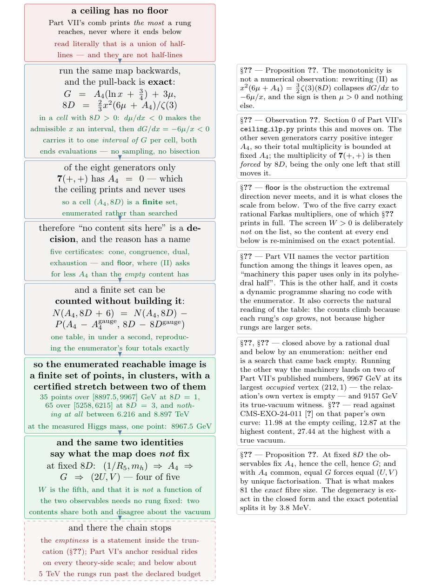
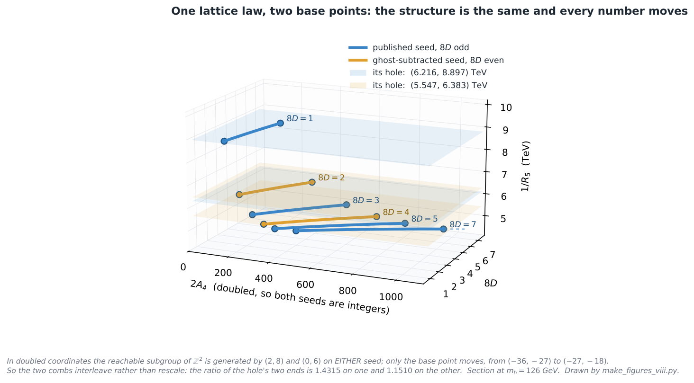

A Certified 2.68 TeV Gap in the Closed-Form Map of the Compactification Scale in SU(7) Grand Gauge-Higgs Unification, and the Invariant Its Two Observables Cannot See (Part VIII)
At a glance
What the paper contributes
Part VII of the series bounds the compactification scale of the SU(7) grand gauge-Higgs model of Komori and Maru from above. This paper runs the same closed-form map backwards: given a target (1/R5, mh), it returns a bulk content or a named certificate that none exists. Every emptiness statement is about the closed form, not yet about the untruncated model, and the paper says so.
- The inversion is exact (Proposition 1): on a cell with 8D > 0 a target box pulls back to one interval of the moment G, both ends evaluations.
- “No content” is a decision (Observation 1): only 7(+,+) has A4 = 0, so a cell is finite; the five certificates are cone, congruence, an exact rational Farkas pair, exhaustion and floor, and one dual certificate is printed in full.
- A certified gap of the closed-form map: on the published seed the enumerated image is 35 points in [8897.5, 9967] GeV (8D = 1) and 65 in [5258, 6215] GeV (8D = 3), and nothing lies in (6.216, 8.897) TeV. At the measured Higgs mass one point remains, 1/R5 = 8967.5 GeV, carried by 81 contents with the same one-loop potential.
- What the two observables cannot see (Proposition 3): on a fixed rung they fix four of the five complete invariants, but two contents share both and disagree about the vacuum invariant W.
- Counting without building (Proposition 2, the classical restricted-partition recursion): a cell is counted by dynamic programming, which reproduces the enumerator’s totals over 69 million contents.
🚀 Start here: Proposition 1: on a cell with 8D > 0, a target box pulls back to one interval of G, with both ends evaluations.
Main results:
- Proposition 1: on a cell with 8D > 0, a target box pulls back to one interval of G, with both ends evaluations
- Observation 1: a cell (A₄, 8D) is a finite set, because only 7(+,+) has A₄ = 0
- Proposition 3: on a fixed rung the two observables fix A₄, G and (U, V), and leave only W free
🗺️ Map of the results (click a box to go to it)
Dependencies in the written proof: an arrow A → B means that this proof of B uses A. Every result rests on its written proof; the tags record what was checked besides, and each statement's “Evidence & scope” block says how far. The colour of a box is its strongest tag, in the order above; the tags in the box give the rest. Boxes with a thick border are the main results; click a box to read the statement.
📐 Setting (copied from the paper, §3)
Everything the potential predicts factors through the moments. With \(x = \pi {\alpha _{\min }}\) and \(\mu = m_h^2/(K\pi ^2)^2\), \(K = (\sqrt3/2\pi ^3)m_W g_4\), Part VII’s two logarithm-free identities are
A target box in \((1/R_5, m_h)\) is a box in \((x,\mu )\), since \(1/R_5 = 2\pi m_W/x\). A rung in what follows is a value of \(8D\), and \(A_4\) runs along it; a single \((A_4, 8D)\) is a cell of that rung. (§4) A bulk content is a non-negative integer combination of eight generators, one for each pairing of the four \(SU(7)\) representations [ 1 ] admits in the bulk — \(\mathbf{7}\), \(\mathbf{28}\), \(\mathbf{48}\), \(\mathbf{84}\) — with the two orbifold parities \((+,+)\) and \((+,-)\). […] of the eight generators, only \(\mathbf{7}(+,+)\) has \(A_4 = 0\), and the other seven have positive integer \(A_4\). (§5) The count is a vector partition function — the number of \(n \in {\mathbb {Z}}^8_{\ge 0}\) with \(\sum _j n_j A_4^{(j)} = A_4 - A_4^{\rm gauge}\) and \(\sum _j n_j (8D)^{(j)} = 8D - 8D^{\rm gauge}\). (§6) Two bulk contents have the same one-loop potential, as a function of \(\alpha \), if and only if they agree on all five of \((A_4, 8D, 2U, V, 2W)\). […] Part VII’s own \(G = \tfrac {25}{12}A_4 - U\ln 2 - V\ln 3\).
Abstract.
Part VII [ 17 ] turns the one-loop Wilson-line potential of the \(SU(7)\) model of [ 1 ] into an integer program over the lattice of bulk contents and certifies \(1/R_5 \le 10.03\) TeV, with an exact rational dual. That is an extremal statement, and the extremal direction has no use for a lower end: a content sits at or below its rung’s ceiling, and where below is not asked. Here we run the map backwards. Given a target box in the two observables the closed form predicts, \(1/R_5\) and \(m_h\), we either exhibit a bulk content or return a named certificate that none exists — or, where a rung outruns the declared budget, say so rather than print a no-go that has not been earned, which happens once in the table below and is marked. The certificates are of five kinds — the moment cone, the mod-\(6\) congruence, an exact rational Farkas pair, a finite exhaustion, and a floor: the inverse map can demand an \(A_4\) below that of the empty content, which non-negative multiplicities forbid. The floor is the obstruction the extremal direction never meets, and it is what closes the reachable set from below. Deciding is possible at all because of one fact the lattice prints and the ceiling never uses: of the eight generators only \(\mathbf{7}(+,+)\) has \(A_4 = 0\), so at fixed \(A_4\) the content is confined to a finite set and “no content sits here” stops being a failed search. A content determines its two observables outright, with no continuous parameter left, so the image of any finite part of the lattice is a finite set of points. Enumerating the whole segment of each rung the certified cap allows says how many: on the seed printed in [ 1 ] they fall into one cluster per rung — \(35\) points spanning \([8897.5,\, 9967]\) GeV at \(8D=1\), \(65\) spanning \([5258,\, 6215]\) at \(8D=3\) — with nothing at all in between. That empty stretch is \(2682\) GeV wide, forty-five times the widest gap inside either cluster, and it is closed above by that rung’s own dual certificates and below by an enumeration of rung three, with every rung of \(8D \ge 5\) ruled out by the relaxation’s monotone ceiling; being a certificate rather than a measurement is what separates it from the gaps between neighbouring points. Requiring the electroweak point to be the true vacuum leaves, on the top rung, nine of those \(35\) points, spanning \([8897.5,\, 9157]\) GeV, both ends contents and both re-minimised on the exact potential. At the measured Higgs mass [ 10 ] what is left is a single point: \(1/R_5 = 8967.5\) GeV, on which \(81\) distinct contents coincide — and by Part VII’s completeness theorem they coincide in all five invariants, so they are not \(81\) models predicting the same thing but \(81\) ways of building a single one-loop potential, the smallest of \(19\) multiplets and the largest of \(198\). Asked for a design rather than a bound, the same machine returns one: a content of eight multiplets puts \(1/R_5\) at \(9008.5\) GeV with \(m_h = 126.6180\) GeV and the electroweak point the deepest on the domain, and the roster of certificates it returns instead, at the scales where it returns one, falls exactly where the clusters say it must. Carried to the dijet angular distribution of CMS-EXO-24-011 [ 25 ] on Part VII’s own published curve — which reproduces that paper’s four teeth as a control before anything new is read from it — the clusters transport to clusters, and the smallest \(\Delta \chi ^2\) any content with a true vacuum reaches is \(27.44\), against \(12.87\) at the highest content of any kind and \(11.98\) at the relaxation ceiling nothing occupies. The same machinery run on the candidate gauge seed — the one carrying the ghost subtraction, where \(A_4\) is half-integral and \(8D\) even — reproduces its archived ceiling and then finds the same structure with different numbers: \([6384,\, 6574]\) GeV at \(8D=2\), a hole \((5.547,\, 6.383)\) TeV, and a single point \(6407.7\) GeV at the measured mass. The bifurcation moves the numbers and not the structure, which is what can be said while the convention behind it is open. Every emptiness statement here, the hole included, is a statement about the closed form the two identities define; the content at every cluster end and every delivered design is re-minimised on the exact potential, and §11 keeps the two apart.
hdrblue!45 hdrblue!85The first job is to say what the extremal direction leaves undetermined, and why that is not a gap in Part VII but a question it was never asked.
1 Introduction: what a ceiling does not say
In gauge-Higgs unification the Higgs is the extra-dimensional component of a higher-dimensional gauge field [ 2 , 3 ] , and the Wilson-line vacuum is the electroweak hierarchy: in the model considered here, by its eq. (82),
so fixing the vacuum fixes the scale and there is no freedom to decouple. \(R_5\) is one of the model’s two compactification radii and the only one this paper touches: the second, \(R_6\), is where the colour-changing gauge bosons live, [ 1 ] leaves its scale free, and everything below is at leading order in \(R_5/R_6\) — an approximation inherited whole and revisited in §11. Part VII [ 17 ] ends with a chain of bounds on that one number. Once the Higgs mass is pinned, \({\alpha _{\min }}\) is algebraic in two quantised moments of the bulk content; maximising \(1/R_5 = 2\pi m_W/x\), \(x = \pi {\alpha _{\min }}\), over the lattice of admissible contents is an integer program whose relaxation has a two-variable dual, solved exactly in rationals. The chain reads \(10.03\) TeV for arbitrary content, \(10.01\) once the relaxation’s vertex is found empty, \(9.22\) once the electroweak point is required to be the true vacuum, and \(9.09\) at the Higgs mass the Higgs actually has.
Every one of those is a statement about a maximum. The paper is careful about what that leaves open, and says so where the per-rung ceilings are drawn as a comb: “the tooth is the most that rung reaches rather than all of it. A content may sit anywhere at or below its own.” Read literally, that models the reachable set as a union of half-lines — each rung reaching down without end — whose union is everything below the top tooth. Nothing in Part VII depends on it: the collider argument uses only the half that stays true, that a content at or below its ceiling sits at or above that ceiling’s \(\Delta \chi ^2\). But the sentence is where this paper begins, because the half-lines are not half-lines.
hdrblue!45 hdrblue!85If the extremal direction cannot see where a rung ends, what can? — run the map the other way.
The inverse question is the one a reader asks next: I want \(1/R_5\) near \(5\) TeV; which bulk content gives me that, and if none does, why not? It is not a new kind of question — the inverse map from signatures to model space is [ 5 ] ’s, and its central finding, that the inverse image is a set of isolated islands with degeneracies, is theirs; scanning a discrete space of field assignments and reporting which subset is realistic is the micro-landscape literature’s [ 6 ] . What is new here is that in this model the inverse map is decidable: the answer “no content exists” is a proof with a certificate, not a search that came back empty, and the image of the forward map turns out to have a hole in it.
Where this sits in the series, and why “inverse” means a third thing here.
Part VII gives the roll-call of what Parts I–V [ 11 , 12 , 13 , 14 , 15 ] settled and it is not repeated. What is worth saying here is the direction, because the word has now meant three things in eight papers and they are easy to confuse. Those five run the inverse direction in the phenomenological sense: given an observation, what is excluded. Parts VI [ 16 ] and VII run the direct one, from a bulk content to a sign and then to a number. This paper says inverse in the sense the word ordinarily has — solve the map: given the value of the observable, produce the content, or prove that none exists. The first sense narrows a space of models from data; this one asks what the model was ever able to say.
And across that distance one thing repeats, which was not planned. Part V asked what the Higgs potential cannot see, and answered with bulk matter [ 15 ] . This paper ends by asking what the two observables cannot see, and answers with an invariant. Three papers apart, the same question one level down the same map — and it is the reason §6 has a last part at all. An upper bound is a half-answer to a question about a set; the other half — where the set ends below, and whether it is connected — turns out to be the half with the structure in it.
And what a reader takes away, which is a different list from what is new.
Three things here are handed over rather than argued for. The first is something to ask: what §7 tabulates is eight questions put to the machine and its eight answers, and a reader with a ninth question can put it and get the same kind of answer back. The second is something to check: §4 prints one certificate with its two multipliers as exact rationals, the eight inequalities they satisfy, and the sum that closes the rung — so the kind of statement this paper rests on can be worked through by hand, with the enclosures of \(\ln 2\) and \(\ln 3\) the only thing the archive still has to supply. The third is something to argue with: the ledger at the end sorts every claim into established, corrected here, or open, with its evidence beside it, and it names on its own initiative the two places where a result of ours had to be weakened.
What is new here.
Six things, in the order they are derived.
The inversion is exact (§3). A target box in \((1/R_5, m_h)\) pulls back to the rungs whose certified ceiling clears the target — finitely many for every target decided here — then to finitely many cells on each, and on every cell to one interval of the logarithmic moment \(G\) whose two ends are evaluations rather than searches: for \(8D{\gt}0\), \(\mu '(x){\lt}0\) makes the admissible set of \(x\) an interval when non-empty, and \(G'(x){\lt}0\) maps it to one interval of \(G\) per cell. No sampling and no bisection enter anywhere.
“No content” is a decision (§4), which is what makes any of the rest a statement rather than a report. Only \(\mathbf{7}(+,+)\) has \(A_4 = 0\), so a cell — one rung at one \(A_4\) — is a finite set; and the ways a target can fail are five, each with a name and, in two of the five, exact rational multipliers.
On the enumerated segments, the reachable image is a finite set of points in clusters, with a macroscopic certified gap between two of them (§6). Rung one reaches \(35\) values of \(1/R_5\), \(31.5\) GeV apart on average; rung three reaches \(65\). Between the top of rung three’s cluster and the bottom of rung one’s, nothing at all over \(2682\) GeV — forty-five times the widest gap inside either cluster, closed above by a dual certificate and below by an enumeration. That a finite image is disconnected is free; what is not free is a stretch of that size, and that it is certified. It is the floor obstruction, and the floor is the object the extremal direction never meets.
A design, not only a bound (§7). Given a scale, the machine returns a bulk content that sits there with the right Higgs mass and a true vacuum — verified on the exact potential, not on the screen — or the roster of certificates that none does. It is also where the machine reports its own reach rather than printing a no-go it has not earned.
The clusters transport to the collider, and the occupied ends are what is read (§8). Because \(\Delta \chi ^2\) is monotone over the stretch the reachable set occupies — measured there and not over the whole curve, where it is false — the image of the clusters is clusters, with the ends crossed over. Three numbers come out and they answer three different questions: \(11.98\) at the relaxation ceiling nothing occupies, \(12.87\) at the highest content of any kind, \(27.44\) at the highest with a true vacuum. And the likelihood is not a scaling law, so none of them can be obtained by rescaling Part VII’s; it has to be read at the point. The same section says why a resonance search is not the instrument: at \(\Gamma /M\simeq 0.16\) the spectrum ends less than two widths above the window, and past its end on the published seed, so there is no bump to find — which also makes one of Part VII’s own prescriptions inexecutable at its own masses.
The phenomenon survives the gauge-seed fork (§9) and the numbers do not. In doubled coordinates both seeds carry the same lattice law and differ only in the base point, so the structure — windows, floors, a hole, a point at the measured mass — is common; the two holes are not a rescaling of one another. That is the honest form of the statement while [ 1 ] ’s eq. (68) is open.
Figure 1 is not that list but the derivation under it: the six links each force the next, and between them they produce items 1–3 and the second half of the title, while items 4–6 are what the machine is then used for. It is deliberately the same drawing Part VII opens with, because this paper is the same map read backwards: there the links carry a maximisation down to a number, here they carry a question about a set down to the set — and then to what the set does not determine.
🖼️ Figure 1

The chain, and every link is something the extremal direction never had to decide. It is Part VII’s opening chain read backwards, and each box is forced by the one above rather than chosen: monotonicity of \(\mu \) and then of \(G\) makes the pull-back one interval per cell, one generator with \(A_4=0\) makes a cell finite, finiteness makes “no content exists” a decision with a named certificate, and only then does it make sense to ask how finite. The last green box is the same two identities read for what they leave undetermined, which is the second half of the title. The red box is not a link but the edge of the chain.
hdrblue!45 hdrblue!85Before any of the six: which equations are read from Part VII rather than rebuilt, what the one approximation is, and the caveat every theory-side number in this paper carries.
2 What is inherited, and what is computed
Nothing in §§3–9 rebuilds the physics. Five objects are read from Part VII’s directory and named at the point of use: the one-loop potential and its closed form; the symbolic \(G\) data of its integer program, extracted from the file that established it rather than retyped; the two gauge seeds; the certified per-rung relaxation ceiling; and the \(\Delta \chi ^2\) curve that §8 reads. What is computed here is the inverse map on top of them.
The caveat, stated once and carried to the end.
Part VI records an unresolved residual between the \({\alpha _{\min }}\) column [ 1 ] publishes and the one our own minimisation of their potential returns. Every theory-side scale in this paper is built from our column, so every one of them inherits that question, and it stays open here: this paper does not touch it. What does not inherit it is the arithmetic — the congruence, the finiteness of a cell, the five certificates — since none of those passes through \({\alpha _{\min }}\) at all.
And what it stands on, which is worth saying at the start rather than the end.
This paper computes almost no physics. The one-loop potential is [ 1 ] ’s, and its vacuum-stability criterion is [ 4 ] ’s; the closed form, the two identities (2), the mod-\(6\) congruence, the certified per-rung ceiling, the completeness theorem used in §6 and the \(\Delta \chi ^2\) curve read in §8 are all Part VII’s, and are read from its directory rather than retyped — the symbolic \(G\) data is extracted from the file that established it, for the reason that a retyped table is a second chance to be wrong. The measurement is CMS’s, unfolded, with CMS’s own covariance and prediction, from HEPData; the Higgs mass is [ 10 ] ’s. Rational duality, Farkas certificates and Hilbert bases are standard [ 7 ] , and that a lattice count of this shape is a vector partition function is [ 8 ] . That an inverse map from observables to model space is worth running at all is [ 5 ] ’s. What is added here sits on top of all of it, and §10 says which is which, item by item.
And one approximation, which is the sharpest limit on what may be claimed.
The closed form uses the expansion of the potential rather than the full \(\mathrm{Li}_5\) sum. The content at every cluster end, and every delivered design, is re-minimised on the exact potential over the whole fundamental domain. What that buys is exact for the content: it sits where the table says, and its vacuum is what the table says. It does not make the end an exact-potential end — that some other content is not displaced past it by the omitted terms is not shown. And the emptiness statements are further from exact still, (3) among them: the floor is a dual bound on \(G\), and \(G\) lives inside the truncation. Re-minimising the two ends does not rule out some other content being displaced into the stretch by the omitted terms. This is not a footnote and §11 states it first rather than last.
The screen, and why it is not a certificate.
Requiring the electroweak point to be the true vacuum is the orbifold criterion of [ 4 ] ; summed over a bulk content Part VII turns it into a fourth linear functional, \(F(1)-F(0) = \tfrac {31}{16}\zeta (5)W\), and carries \(W{\gt}0\) inside the integer program. That comparison is between the two symmetric points and nothing else. It is used here as a screen — cheap, linear, and carried through the lattice — and then discharged by an exact minimisation. §6 reports how often the difference matters, and it matters.
The instrument is controlled before it is believed.
The two runs behind this paper are ordered so that results come after controls, never beside them. The second reproduces the first’s six archived numbers with independently derived machinery before reporting anything of its own, and reproduces the archived relaxation ceiling of the candidate branch — \(7376.3\) GeV — before reporting anything new about that branch. The enumerator itself is falsified against a different algorithm: every segment it enumerates is counted again by dynamic programming over the partial moments, sharing no code with the generator, and the two counts must agree exactly. And every rung the designer closed with a dual certificate on a target it delivered no design for is enumerated by brute force anyway, to see whether the certificate lied: on the \(3.0\) TeV target, \(9\) rungs carried one and the brute force found \(0\) contents.
hdrblue!45 hdrblue!85With the instrument controlled, the question becomes: what does a target box even look like on this lattice?
3 The inversion
Everything the potential predicts factors through the moments. With \(x = \pi {\alpha _{\min }}\) and \(\mu = m_h^2/(K\pi ^2)^2\), \(K = (\sqrt3/2\pi ^3)m_W g_4\), Part VII’s two logarithm-free identities are
A target box in \((1/R_5, m_h)\) is a box in \((x,\mu )\), since \(1/R_5 = 2\pi m_W/x\). A rung in what follows is a value of \(8D\), and \(A_4\) runs along it; a single \((A_4, 8D)\) is a cell of that rung. Fix a cell. Then (II) makes \(\mu \) a function of \(x\), the admissible set is a curve parametrised by \(x\), and (I) reads \(G = G(x)\) along it. One lemma makes the region an interval whose ends are evaluations rather than searches.
Fix a cell \((A_4, 8D)\) with \(8D {\gt} 0\), and move along the curve (2)(II). Then
so \(G\) is strictly decreasing in \(x\). The admissible \(x\) are themselves an interval, because solving (2)(II) for \(\mu \) gives
which makes \(\{ x{\gt}0 : \mu (x) \in [\mu _-,\mu _+]\} \) an interval; intersecting it with \([x_-,x_+]\) leaves an interval \([x_{\min }, x_{\max }]\) when that intersection is non-empty. Hence the set of \(G\) a target box admits on this cell is the interval \([\, G(x_{\max }),\, G(x_{\min })\, ]\), and both ends are evaluations. When the intersection is empty the cell admits no \(G\) at all, and the target has no content there — which is a decision and not a failed search, by §4.
Isabelle · ours · partshow
Only a part is in Isabelle: identity (I) of Part VII enters as a hypothesis for dG/dx; the rest is formalized
mu_window_interval · Isabelle/SU7Rung/G_Window.thy, line 34 — μ strictly decreasing, so the admissible x form an interval
theorem mu_window_interval:
assumes zd: "0 < z * d"
and x1: "0 < x1" "a \<le> mu z d A x1" "mu z d A x1 \<le> b"
and x2: "a \<le> mu z d A x2" "mu z d A x2 \<le> b"
and x: "x1 \<le> x" "x \<le> x2"
shows "0 < x \<and> a \<le> mu z d A x \<and> mu z d A x \<le> b"G_strictly_decreasing · Isabelle/SU7Rung/G_Window.thy, line 56 — dG/dx = −6μ/x < 0 where μ > 0, so G decreases (identity (I) of Part VII as a hypothesis)
theorem G_strictly_decreasing:
assumes I: "\<And>x. 0 < x \<Longrightarrow> (G has_real_derivative (A / x - (12 / 8 * z * d) / x ^ 3)) (at x)"
and pos: "\<And>x. x1 \<le> x \<Longrightarrow> x \<le> x2 \<Longrightarrow> 0 < mu z d A x"
and x1: "0 < x1" and lt: "x1 < x2"
shows "G x2 < G x1"🆕 Classical and new: the paper lists the exactness of the inversion among what is ours (§1, item 1); the identities (I), (II) are Part VII’s.
↳ Not used by another result of the paper.
💡 In plain words (commentary, not part of the paper)
1. Ask for a box of compactification scales \(1/R_5\) and Higgs masses \(m_h\). On one cell \((A_4,8D)\) of the lattice of bulk contents, with \(8D{\gt}0\), the box asks for one interval of the logarithmic moment \(G\), and both ends of that interval are evaluations of a formula: no sampling and no bisection. If the interval is empty, the cell has no content in the box. 2. Why: Part VII’s identity (II) makes \(\mu \) (the Higgs mass in the paper’s units) a strictly decreasing function of \(x=\pi \alpha _{\min }\) on the cell, so the admissible \(x\) form one interval; and along that curve identity (I) gives \(dG/dx=-6\mu /x{\lt}0\), so \(G\) is strictly decreasing and the image of that interval is the interval between its two end values. At \(8D=0\), \(\mu \) would be constant and the argument fails, which is why the hypothesis is there; every rung of the published seed has \(8D\) odd. 3. What the paper claims: the exactness of the inversion is listed first among what is new (§1, item 1); the identities (I) and (II) themselves are Part VII’s. That an empty interval is a decision rather than a failed search needs the finiteness of a cell (Observation 1).
🛡️ Evidence & scope
Program: the inverse map on the published seed: the five certificates, the clusters, the gap, the worked Farkas certificate, the design table; finiteness of a cell (Observation 1) used throughout. scripts/inverse_design.py
Program: the same on both gauge seeds in doubled coordinates. scripts/reachable_set.py
Program: every interval printed as empty is contained in the one the run certifies. scripts/check_intervals.py
Program: the displayed formulas against their Python reading and the archived run; each link perturbed separately and required to fail. scripts/check_formulas.py, scripts/falsify_formulas.py
The middle step of the first chain is (II) itself, rewritten as \(x^2(6\mu +A_4) = \tfrac 32\zeta (3)(8D)\); the sign is then \(\mu {\gt}0\) and nothing else. The second chain is what turns monotonicity into an interval: a target box constrains \(x\) and \(\mu \) separately, and on a cell those are not independent, so the admissible set is an intersection and has to be shown to be connected before the image of \(G\) can be read off its two ends. The hypothesis \(8D{\gt}0\) is where that argument lives — at \(8D=0\), \(\mu (x) = -A_4/6\) is constant in \(x\) and the preimage is everything or nothing — and every rung of the published seed has \(8D\) odd, so the case never arises here. The pull-back of a target box is therefore an exact region in \((A_4, 8D, G)\): finitely many candidate cells, and on each one an interval of \(G\).
And for every target decided here the rung set is finite, which is worth separating from wishful phrasing.
Part VII proves its per-rung relaxation ceiling monotone decreasing in \(D\). So for a target box whose lower end is \(L{\gt}0\), only the rungs whose ceiling is at least \(L\) can meet it, and monotonicity makes those an initial segment: once one rung’s ceiling drops below \(L\), every rung above it does too. That is the whole of the finiteness used here, and it is a statement about a given \(L\) rather than a claim that the ceiling tends to zero, which Part VII does not prove and this paper does not need. In practice §7 scans to \(8D \le 21\), where the ceiling is \(3390\) GeV, so every target above that is decided over all rungs and every target below it is reported with the segment that was reached. What is decidable in principle and what this implementation decides are therefore not the same statement, and §7 and §12 keep them apart.
hdrblue!45 hdrblue!85The region is exact. Is membership in it decidable?
4 Why “no content” is a decision
The lattice is where \(SU(7)\) enters, and it enters only here. A bulk content is a non-negative integer combination of eight generators, one for each pairing of the four \(SU(7)\) representations [ 1 ] admits in the bulk — \(\mathbf{7}\), \(\mathbf{28}\), \(\mathbf{48}\), \(\mathbf{84}\) — with the two orbifold parities \((+,+)\) and \((+,-)\). The group fixes which four, and their Dynkin indices fix the two moments each contributes; from that point on every argument in this paper is arithmetic on the resulting \(8\)-generator lattice, and no further group theory is used. Section 0 of Part VII’s ceiling_ilp.py prints that lattice and never uses one feature of it: of the eight generators, only \(\mathbf{7}(+,+)\) has \(A_4 = 0\), and the other seven have positive integer \(A_4\). Hence
Fix a cell \((A_4, 8D)\) inside the moment cone, so that \(A_4 \ge A_4^{\rm gauge}\). The seven generators with \(A_4^{(j)} \ge 1\) satisfy \(\sum _j n_j A_4^{(j)} = A_4 - A_4^{\rm gauge}\) with every term non-negative, so \(\sum _j n_j\) is bounded and each of the seven with it; and the multiplicity of \(\mathbf{7}(+,+)\) is then forced by \(8D\), since among the generators left it is the only one that still moves it. The cell is a finite set, enumerated rather than searched.
Lean · ours, in partshow
added to the Lean repository after publication: the input of the observation, the moments (8D, 2A₄) of the eight bulk generators computed from the weights by decide, of which only 7(+,+) has 2A₄ = 0; the finiteness of a cell itself is not formalized
✅ Checked when this page was built: SU7WeightChannels.lean compiles with Lean 4.35.0, no errors, no sorry. Axioms — eight_generator_moments: propext, Classical.choice, Quot.sound.
Reproduce: Lean 4.35.0, Mathlib f0b4c8150aa0; in that Lean project, lake env lean SU7WeightChannels.lean (SHA-256 of the compiled file: c5ea89a376796475…; a source page on this site may show it with comments edited, under its own hash).
Trust base: 🔒 kernel only — only part of the statement is formal (see the box). Lean: 1 result, standard axioms only
Proof: in this note·Formalized: Isabelle/HOL, by the author (public formalizations repository)·Covers: the implication only (identity (I) of Part VII enters as a hypothesis for dG/dx; the rest is formalized)·Cite: Proposition 1, p. 7, doi:10.5281/zenodo.22159037
🆕 Classical and new: the paper calls it ours: Part VII’s lattice dump prints the fact and never uses it (§4, §9).
↳ Used in: Proposition 1, Proposition 2
💡 In plain words (commentary, not part of the paper)
1. A bulk content is a non-negative integer combination of eight generators (the representations \(\mathbf7\), \(\mathbf{28}\), \(\mathbf{48}\), \(\mathbf{84}\) of \(SU(7)\), each with two orbifold parities). Fixing both moments \((A_4,8D)\) leaves only finitely many contents, so whether a cell holds a content is decided by listing them. 2. Why: only \(\mathbf7(+,+)\) has \(A_4=0\); the other seven have positive integer \(A_4\), so at fixed \(A_4\) their multiplicities are bounded, and the multiplicity of \(\mathbf7(+,+)\) is then forced by \(8D\), being the only generator left that still moves it. 3. A whole rung (fixed \(8D\), any \(A_4\)) is not finite: \(\mathbf{48}(+,+)\) has \(8D=0\) and can be added without limit. What is finite inside a target box is a rung’s admissible segment. The paper calls the observation its own: Part VII’s lattice dump prints the fact and never uses it. With it, “no content” becomes one of five named certificates: floor, cone, congruence, dual, exhaustion.
🛡️ Evidence & scope
Program: the four admissible segments 8D = 1, 3, 5, 7 enumerated whole; on the 3.0 TeV target, the 9 dual-closed rungs brute-forced: 0 contents. scripts/inverse_design.py
A whole rung is not finite, and it is worth saying so where the temptation is: \(\mathbf{48}(+,+)\) carries \(8D = 0\), so it can be added without limit at fixed \(8D\) and \(A_4\) grows without bound. What is finite is a rung’s admissible segment. Inside a target box that is immediate: solving (2)(II) for \(A_4\) gives \(A_4 = \tfrac 32\zeta (3)(8D)/x^2 - 6\mu \), and \((x,\mu )\) range over compact intervals there, so \(A_4\) is confined to a bounded interval and the lattice leaves finitely many cells on the rung. Below, where no box is named, the certified relaxation cap plays the same role.
With that, a target either has a content or does not, and when it does not the reason has a name. Five occur.
|
certificate |
what it says, and how strong it is |
|
floor |
(II) demands an \(A_4\) below the gauge seed’s own — below the empty content. Multiplicities are non-negative, so nothing sits there at any size. This is the obstruction the extremal direction never meets, and it is what closes the scale from below. |
|
cone |
\((A_4,8D)\) lies outside the moment cone: not even a real, relaxed content sits there. |
|
congruence |
\(8D \equiv 2A_4 + 3 \pmod6\) fails. An integer obstruction, at any size. |
|
dual |
exact rational Farkas multipliers \((\lambda ,\nu )\) bound \(G\) over the real relaxation of this cell, from below or from above, and the interval of Proposition 1 misses the bound. Rational throughout: \(\ln 2\) and \(\ln 3\) enter only through enclosures rounded so that a bound stays a bound. |
|
exhaustion |
the finite set of Observation 1 was enumerated and nothing landed. |
And one of them written out, because a paper that sells certificates should show one.
Take the lowest legal \(A_4\) on rung one, \((A_4,8D) = (-13,1)\). Through (2) the Higgs window demands \(G \ge 266.8101645933\) there. The multipliers are exact rationals, and since the selling point of this paper is that they are, they are printed and not deferred, in the form the run emits them:
that is \(\lambda = 1.159137092587\) and \(\nu = 0.115524530093\). They satisfy \(\lambda A_4^{(j)} + \nu \, (8D)^{(j)} \ge g_j\) on all eight generators, with equality on four of them. The table below renders both sides to six places, which is enough to see the four strict inequalities and not enough to verify the four equalities: those are exact statements about \(\lambda \), \(\nu \) and the rational enclosures of \(\ln 2\) and \(\ln 3\), and checking them means working in the rationals — which is the point of quoting \(\lambda \) and \(\nu \) exactly, and the enclosures are in the archive.
|
\(\lambda A_4^{(j)}\! +\! \nu (8D)^{(j)}\) |
\(\ge \) |
\(g_j\) |
\(\lambda A_4^{(j)}\! +\! \nu (8D)^{(j)}\) |
\(\ge \) |
\(g_j\) |
||
|
\(\mathbf{7}(+,+)\) |
\(-0.693147\) |
\(=\) |
\(-0.693147\) |
\(\mathbf{48}(+,+)\) |
\(20.864468\) |
\(=\) |
\(20.864468\) |
|
\(\mathbf{7}(+,-)\) |
\(2.083333\) |
\(=\) |
\(2.083333\) |
\(\mathbf{48}(+,-)\) |
\(12.507784\) |
\({\gt}\) |
\(4.190017\) |
|
\(\mathbf{28}(+,+)\) |
\(21.553723\) |
\(=\) |
\(21.553723\) |
\(\mathbf{84}(+,+)\) |
\(79.976568\) |
\({\gt}\) |
\(21.752204\) |
|
\(\mathbf{28}(+,-)\) |
\(4.867597\) |
\({\gt}\) |
\(-3.450169\) |
\(\mathbf{84}(+,-)\) |
\(135.587905\) |
\({\gt}\) |
\(79.871375\) |
Colour: blue shade = the number’s size within its column.
Summing against any non-negative multiplicities, with \(T = A_4 - A_4^{\rm gauge} = 5\) and \(Q = 8D - 8D^{\rm gauge} = 28\),
a margin of \(281.763422\). Nothing sits there — not an integer content, and not a real relaxed one either. That is the whole of a dual certificate: two numbers, eight inequalities and a sum, checkable without running anything. The \(\ln 2\) and \(\ln 3\) inside \(g_j\) enter only through rational enclosures rounded so that an upper bound stays an upper bound, which is why the chain is exact and not merely accurate.
Two things called floor, and they are not the same thing.
The certificate above is named for what it detects: a target so high on a rung that (II) asks for less \(A_4\) than the empty content already has. The floor of a window, in §6, is the smallest \(1/R_5\) a rung attains — and what closes the rung below it is the other direction of dual, the upper bound on \(G\). Both are exact and both are rational; they are distinguished here because the paper needs them in the same paragraph.
And the screen sits outside the list.
\(W {\gt} 0\) is not a certificate. It compares the two symmetric points and nothing else, so every design produced here is afterwards re-minimised on the exact potential over the whole domain, and so is every content reported below as the end of a window — which makes those contents verified there, and not the ends. §6 reports how often that changes the answer.
Figure 2 draws the verdict at every legal \(A_4\) of every rung this paper enumerates, on both seeds at once. It is the picture the rest of the paper argues from: a rung is not a half-line reaching down, it is a stretch with a red region beneath it.
🖼️ Figure 2

Every legal \(A_4\) within a rung’s certified segment is decided, and the decision has a name. Only the \(A_4\) the lattice admits are drawn: the congruence and the moment cone together leave one value in three, and every other value is closed by congruence at any size. Red: below the first occupied \(A_4\), every legal value carries exact rational multipliers — \(29\), \(34\), \(37\) and \(39\) of them on the four rungs of the published seed, \(31\) and \(34\) on the two enumerated rungs of the other. Green: the stretch the enumerator covered, with contents at both ends. Amber: between the last content and the relaxation’s own cap, allowed by the real relaxation and reached by nothing integral — which is the same emptiness Part VII finds at its vertex, seen here along the whole certified segment rather than at one point. Drawn by make_figures_viii.py, whose lattice arithmetic is checked against the archived runs before anything is plotted.
hdrblue!45 hdrblue!85A cell is a finite set. The next question is the obvious one, and nobody had asked it: how finite?
5 How large is a cell
Observation 1 makes a cell finite, and finiteness is what turns “no content exists” into a decision. It does not say how big the set is, and the difference matters twice over: it is what the enumeration of §6 costs, and it is what the reach of §7 runs out of.
The count is a vector partition function — the number of \(n \in {\mathbb {Z}}^8_{\ge 0}\) with \(\sum _j n_j A_4^{(j)} = A_4 - A_4^{\rm gauge}\) and \(\sum _j n_j (8D)^{(j)} = 8D - 8D^{\rm gauge}\) — and computing one is standard [ 8 ] . Part VII names the object in its own list of what it leaves open, and says it is “machinery this paper uses only in its polyhedral half”. This is the other half, and it costs a dynamic programme over the two partial moments: one table, built once in under a second, from which \(N(A_4,8D)\) is a sum rather than a search.
And it is the strongest control the enumerator has.
Part VII’s machinery and §6’s were already cross-checked by counting five single cells two ways. Counting whole segments checks the same thing against sixty-nine million contents: over the four segments §6 enumerates in full, the table reproduces the enumerator’s totals exactly — \(423631\), \(3888823\), \(15802014\) and \(48907996\) — by an algorithm that shares no code with it and costs a thousandth as much.
The four counting functions coincide, and the reason is the classical recursion.
The restricted partition function obeys \(p_{\mathcal A}(n,k) = p_{\mathcal A}(n-a_k,k) + p_{\mathcal A}(n,k-1)\) — take the last generator or do not — and this is standard and old [ 9 ] . Its vector form, applied to the one generator of this lattice with \(A_4 = 0\), is what ties the rungs together, because that generator moves \(8D\) by \(-6\) and nothing else. We state it in the paper’s own notation because it is used twice below, and not because the identity is new:
Write \(P(T,Q)\) for the number of contents built from the seven generators with \(A_4^{(j)}\ge 1\) alone that reach \((T,Q) = (A_4 - A_4^{\rm gauge},\, 8D - 8D^{\rm gauge})\). Then
Isabelle · oursshow
su7_rung_recursion · Isabelle/SU7Rung/Rung_Recursion.thy, line 140 — the classical recursion (not ours) formalized for the SU(7) data: N(a, q+6) = N(a, q) − P(a, q), with the generator 7(+,+) = (8D, 2A₄) = (−6, 0)
corollary su7_rung_recursion: "Ncount contents su7w 6 a (q + 6) = Ncount contents su7w 6 a q - Pcount contents su7w a q"
su7_cell_finite · Isabelle/SU7Rung/Rung_Recursion.thy, line 103 — Observation 1 for the data: a cell is finite
theorem su7_cell_finite: "finite (cell contents su7w 6 a q)"
🆕 Classical and new: not claimed: the classical restricted-partition recursion [BeckRobins] in its vector form; the paper claims only the measurement that the correction term is 1 or 2 (§9).
↳ Not used by another result of the paper.
🛡️ Evidence & scope
Program: the counting table by dynamic programming; the recursion checked on 4694 grid points; the four enumerator totals reproduced exactly (69 million contents). scripts/rung_census.py
Proof. A content at \((A_4,8D)\) is a pair \((n_0, m)\) with \(m\) built from the seven bounded generators and \(n_0 = (s-Q)/6 \ge 0\) the multiplicity of \(\mathbf{7}(+,+)\), \(s\) being the \(8D\) that \(m\) supplies. Raising \(8D\) by six raises \(Q\) by six, and \(n_0 \mapsto n_0+1\) is a bijection from the contents of \((A_4, 8D+6)\) onto those of \((A_4,8D)\) with \(n_0 \ge 1\). What is left over is exactly the contents with \(n_0 = 0\), which is \(P(T,Q)\). \(\square \)
That is the textbook proof of the textbook identity, written out because the shift is by \(-6\) rather than by a part. What is not inherited is the size of the correction, and that is the whole of the use made of it here. Machine-checked on every point of the grid — \(4694\) of them, no failure. And \(P\) is tiny beside \(N\): on rung one’s cells it is \(1\) or \(2\) where \(N\) runs to \(26933\), so the four curves of Figure 3 are indistinguishable. Which corrects a reading of §6’s table that would otherwise be natural. The contents in the window there climb \(1769 \to 4495 \to 8434 \to 13915\), and the reason is not that higher rungs are bigger sets. At fixed \(A_4\) they are very slightly smaller, by Proposition 2. What grows is the relaxation’s cap — \(215\), \(336\), \(436\), \(533\) — and the count grows with \(A_4\). The same cap is what makes the points column of that table climb too, \(35 \to 65 \to 88 \to 126\) — a longer rung has more legal \(A_4\) to place them on — so a higher rung is a finer set, not a denser one at the same reach.
🖼️ Figure 3

A cell is finite, and this is how finite. Left: the counting function on the four rungs §6 enumerates, with the stretch the Higgs window populates drawn thick. The four curves lie on top of one another, which is Proposition 2: raising \(8D\) by six removes only the contents that carried no \(\mathbf{7}(+,+)\), and there are one or two of those where the cell holds tens of thousands. Right: the same table continued past where the enumerator can go — four rungs are drawn and they coincide for the same reason, which is why one label serves for all four. Both panels are exact integer counts. Drawn by make_figures_viii.py.
And it turns §7’s asterisk into a number.
That section reports a target whose cell “holds of order \(10^7\) contents, past the declared budget”. Counting says how many without building any: \(2792133\) at \((A_4,8D) = (600,9)\), \(12114975\) at \((800,13)\), \(16626077\) at \((850,17)\). The difference between declaring a reach and knowing it is one sum.
What is not claimed, and it was measured before it was not claimed.
A vector partition function is piecewise quasi-polynomial on the chambers of the cone, and saying so here would be free. The period is generated by the \(2\times 2\) determinants of the generators and is large; the seventy-seven legal \(A_4\) of rung one leave no room to measure it. Tested with exact integer finite differences at periods \(1\), \(2\), \(3\), \(6\) and \(12\), no degree up to nine resolves. So this section counts and does not classify, and the quasi-polynomial structure Part VII asks about stays open at this reach.
hdrblue!45 hdrblue!85With the decision in hand and the sets sized, ask the decision everywhere on a rung at once.
6 The reachable set on the published seed
Enumerate each rung’s admissible segment whole, from the gauge seed up to the \(A_4\) the certified relaxation allows, keeping the contents whose \(m_h\) lies in [ 1 ] ’s window \([125,127]\). What comes out is a finite set of points, and saying that first decides how everything after it may be read.
Finite, and coarse enough that the word matters.
A content fixes \((A_4, 8D, G)\), and (2) then fixes one pair \((1/R_5, m_h)\): no continuous parameter is left anywhere in the chain. So the image of the segment enumerated below is finite, and its pairs of numbers are the least and greatest elements — attained, since they are contents, but not the ends of a continuum. Counting the distinct values rather than the contents that carry them says how coarse the set is, and it is coarse: rung one reaches \(35\) values, one for each exact class of \((A_4, 2U, V)\) the window admits, spaced \(31.5\) GeV apart on average, never closer than \(14.61\) GeV and never further than \(59.44\); rung three’s \(65\) values are finer still, and the widest gap inside that cluster is \(30.83\) GeV. So \(59.44\) GeV is the widest gap inside either cluster, and it is rung one’s. “Window” is used below for the range of such a set — least element to greatest — and never for a claim that the range is filled. That distinction is what §8 transports, and it is what makes (3) a result rather than a tautology: a finite set is disconnected for free, and what is not free is that one of its gaps is \(2682\) GeV wide, forty-five times the widest gap inside either cluster, and closed by a certificate rather than observed by a search.
|
\(8D\) |
\(A_4\) cap |
least |
greatest |
least, true vac. |
greatest, true vac. |
points |
contents |
|
1 |
215 |
\(\mathbf{8897.5}\) |
\(\mathbf{9967}\) |
\(\mathbf{8897.5}\) |
\(\mathbf{9157}\) |
\(35\) |
\(1769\) |
|
3 |
336 |
\(5258\) |
\(6215\) |
\(5258\) |
\(5446\) |
\(65\) |
\(4495\) |
|
5 |
436 |
\(4058\) |
\(5103\) |
\(4058\) |
\(4259\) |
\(88\) |
\(8434\) |
|
7 |
533 |
\(3456\) |
\(4441\) |
\(3456\) |
\(3617\) |
\(126\) |
\(13915\) |
Colour: blue shade = the number’s size within its column.
The two “least” columns agree on every rung, and that is a measurement rather than a coincidence of the table: on all four, the lowest content in the Higgs window already has the electroweak point as the true vacuum, so the vacuum condition costs nothing at the bottom of a rung and almost everything at the top: on rung one it leaves nine of the \(35\) points and removes the other twenty-six, all of them above \(9157\) GeV. On rung one the two columns are one and the same content, at \(8897.5\) GeV. It is written \(8897.5\) here because it is attained, and \(8.897\) TeV in (3) because there it is the end of an interval declared empty; one content, and rounding inward means opposite directions on the two sides of it. The “points” column counts distinct values of \(1/R_5\) and the last column the contents that carry them — \(1769\) contents on \(35\) values is the degeneracy of the moment map, and (6) is what that degeneracy is.
Two controls are worth stating before the consequences. The largest \(1/R_5\) any content reaches on \(8D=1\) is \(9967\) GeV, which is the number Part VII prints for the content at its largest occupied vertex, \((A_4,8D) = (212,1)\) — the relaxation’s vertex sits at the cap \((215,1)\) and is empty, which is the amber of Figure 2; and the largest with \(W{\gt}0\) is \(9157\) GeV, which is Part VII’s own true-vacuum witness. Machinery that runs the other way lands on both. Figure 4 is that table drawn on the axis the numbers live on, with the candidate seed of §9 beside it.
🖼️ Figure 4
![The reachable set, on the axis it lives on. One bar per rung, and a bar is a range and not a filled interval: pale blue spans the \(35\) values rung one reaches with \(m_h\) in [ 1 ] ’s window and the \(65\) of rung three, which are too finely spaced to resolve at this width; green spans the part w…](images/img-0004.png)
The reachable set, on the axis it lives on. One bar per rung, and a bar is a range and not a filled interval: pale blue spans the \(35\) values rung one reaches with \(m_h\) in [ 1 ] ’s window and the \(65\) of rung three, which are too finely spaced to resolve at this width; green spans the part where the electroweak point is also the deepest place on the domain — nine of the \(35\) on rung one. The amber tick is the relaxation’s dual bound — allowed by the real relaxation and reached by no integer content, on every rung and not only at Part VII’s vertex. The red band is (3), and what makes it different in kind from the gaps inside a blue bar is that it is forty-five times wider and carries a certificate. Both ends of every blue bar are contents. On the candidate seed the enumerator stops after two rungs, which is said in the panel rather than left as white space: below \(8D=4\) the cells run to \(10^7\) contents and past the declared budget. Drawn by make_figures_viii.py.
The floor is a certificate, not an empty search.
Below the first occupied \(A_4\) on each rung, every legal \(A_4\) is closed by the upper dual bound on \(G\): at small \(A_4\), (I) demands a \(G\) dominated by the \(3\mu \) the Higgs window pins, while the largest \(G\) the moment cone can supply grows only linearly in \(A_4\). On the four rungs above, that accounts for \(29\), \(34\), \(37\) and \(39\) values of \(A_4\) respectively, each with exact rational multipliers. So the obstruction below a rung is certified by the same dual machinery that produces the relaxation ceiling above it — which is not to say the two ends are the same object, and the distinction matters. Below, the certificates run right up to a content: rung one’s lowest, at \(8897.5\) GeV. Above, the highest content sits at \(9967\) GeV and the relaxation ceiling at \(10034\), with a stretch between them that the real relaxation allows and no integer content reaches — the amber of Figure 2. One end is closed by duals and the other is merely bounded by one.
And then the clusters do not touch, over a stretch that is not a spacing.
Both ends are rounded inward rather than to nearest, and the distinction is not pedantry: the ends are attained — rung three’s highest content and rung one’s lowest — so an interval rounded to nearest can assert emptiness at a scale where a content sits, and at the upper end here it does. What is printed above is strictly inside what the run certifies, and check_intervals.py is the gate that checks that containment rather than the endpoints. Three facts close it, and none is a scan. Rung \(3\), its admissible segment enumerated whole, tops out at \(6215\) GeV. The per-rung relaxation ceiling is monotone decreasing in \(D\) — which Part VII proves rather than measures — and at \(8D=5\) it is already \(5137\) GeV, so no rung with \(8D\ge 5\) reaches that far. Rung \(8D=1\), the only one left, holds nothing below \(8897\) GeV. The upper end of the hole rests on a dual certificate, the lower end on an enumeration — and that enumeration is done twice: the census of distinct values in §6’s table runs over the same rungs by a different route and returns the same two extremes, \(6215.35\) GeV at the top of rung three and \(8897.46\) at the bottom of rung one, from a program that shares no code with the designer. Asked instead for a single scale strictly inside the stretch — \(6.5\), \(7.0\) or \(8.0\) TeV — the machine does not even reach the enumeration: on the only rung the box admits, (II) demands less \(A_4\) than the empty content has, and the certificate returned is floor. Figure 5 puts the same statement back on the surface Part VII computes the ceiling over: the hole is a layer that surface passes through and no rung touches.
🖼️ Figure 5

The same thing over the lattice it lives on. Once \(m_h\) is pinned, identity (II) makes \(1/R_5\) an explicit surface over the two quantised moments, with no minimisation left in it — that surface is Part VII’s. What the inverse direction adds is drawn on it: red where the floor argument closes the rung, green from the first content to the last, amber where the relaxation still allows and nothing integral lands. The two translucent planes are the ends of (3), so the hole is a layer of scale that the surface passes through and no content sits on. The section is taken at the centre of the Higgs window; Figure 4 is the whole of it. Drawn by make_figures_viii.py.
With the true vacuum, a ladder of narrow windows.
\(W{\gt}0\) is a screen, and taking its extremes at face value is wrong: the exact potential rejects the \(W\)-screened top of every rung above the first. Hunting inward on the exact potential instead gives \([8897.5,9157]\), \([5258,5446]\), \([4058,4259]\) and \([3456,3617]\) GeV at \(8D=1,3,5,7\) — ranges of \(2.9\), \(3.6\), \(4.9\) and \(4.7~ \% \), separated by gaps of tens of per cent. On the top rung that range holds nine of the \(35\) points, from \(8897.46\) to \(9156.17\) GeV, so it is a ladder of narrow ranges and inside each of them a handful of values, not a band. The top one is what matters, because it is where Part VII’s bound lives: its ceiling is that paper’s \(9.22\) TeV and its floor was never asked for.
Each of those values is heavily populated, and at the measured mass one of them is left.
Of the \(1769\) contents on rung \(1\) with \(m_h\) in the window, \(430\) pass \(W{\gt}0\) and all \(430\) have the electroweak point as the deepest place on \([0,1]\) — which is Part VII’s own sufficiency theorem for that rung, measured rather than assumed — and the cheap test behind that census is falsified before it is trusted, on two contents the full minimisation had already rejected, the \(9967\) GeV content and rung \(3\)’s \(W\)-screened top: it calls both false, as it must, or the count above would mean nothing. Restricting to the measured Higgs mass [ 10 ] , \(125.20\pm 0.11\) GeV, leaves \(81\) contents which occupy a single \((A_4,G) = (86,\, 58.2125)\):
The \(81\) contents are the degeneracy of the moment map, not a spread. Part VII’s bound at the measured mass is \(9087\) GeV; this is the value attained under it.
And they are not \(81\) theories that agree — they are a single one-loop potential built \(81\) ways.
\((A_4,G)\) is two coordinates, and Part VII’s completeness theorem says something stronger than agreement in two: two bulk contents have the same one-loop potential, as a function of \(\alpha \), if and only if they agree on all five of \((A_4, 8D, 2U, V, 2W)\). So the question is not whether the \(81\) predict the same number but whether they are the same object, and it is decidable. Comparing \(G\) in floating point is evidence rather than the thing. The exact object is the triple of its transcendental coordinates, \(G = \tfrac {25}{12}q - r\ln 3 - s\ln 2\), extracted from Part VII’s ceiling_ilp.py rather than retyped: the triple fixes \(G\), and equality is tested at the level of the exact triple rather than inferred from floating-point equality of \(G\) — which needs no statement about the independence of \(1\), \(\ln 2\) and \(\ln 3\), because the implication used runs the easy way. Matching it against Part VII’s own \(G = \tfrac {25}{12}A_4 - U\ln 2 - V\ln 3\) coefficient by coefficient gives the dictionary
so agreement in \((q,r,s)\) on a fixed rung is agreement in \((A_4, 2U, V)\). That reading is not assumed but measured: \(q\) equals \(A_4\) on all eight generators and on the base point, and under it Part VII’s parity theorem — \(8D \equiv 2U \equiv 2W \equiv 1 \pmod2\) — holds on all \(1169\) contents of that cell, while under the transposed reading it fails on every one of them. On \((A_4,8D)=(86,1)\) those \(1169\) contents fall into \(27\) exact classes, and the class of \(81\) is
All five coordinates coincide — written as the five-vector because that is the object the completeness theorem is about, and reading it off is the whole of the check. The three odd entries \(8D=1\), \(2U=349\) and \(2W=17\) are the parity theorem doing the auditing: under the transposed dictionary \(2U\) would read \(0\), and an even \(2U\) is forbidden. By the completeness theorem the \(81\) therefore share the same one-loop potential identically in \(\alpha \) — and they are not small variations on each other: the smallest is \(19\) multiplets and the largest \(198\). What that buys is exactly one thing and it is worth naming: they are one one-loop-potential equivalence class, not one theory. Field contents of \(19\) and of \(198\) multiplets differ in anomalies, in running, in what they do at higher loops and in every observable the Wilson-line potential does not compute; the completeness theorem is about that potential and about nothing else. That is not automatic, which is what makes it worth measuring: other classes on the same rung do split in the fifth coordinate. The class at \((q,r,s)=(86,0,\tfrac {397}{2})\), of \(90\) contents, carries two values of \(2W\), so a census that could only ever answer “one” is not what produced (6).
And agreeing in the two observables is weaker than that, by exactly one coordinate.
A reader measures \(1/R_5\) and \(m_h\), which is \((x,\mu )\). On a fixed rung — a fixed \(8D\) — those pin the cell and then everything but \(W\), by an argument that costs three lines and that the census above had been assuming without saying so.
Fix \(8D\). Two contents with the same \((1/R_5, m_h)\) have the same \(A_4\), hence the same \(G\), hence the same \((U,V)\). So at fixed \(8D\) the two observables determine four of the five invariants — \(A_4\), \(8D\), \(2U\), \(V\) — and leave only \(W\) free.
Lean · ours, in partshow
added to the Lean repository after publication (21-oct-2026): 2^a 3^b = 1 with integer exponents forces a = b = 0
✅ Checked when this page was built: TwoThreeIndependence.lean compiles with Lean 4.35.0, no errors, no sorry. Axioms — two_zpow_mul_three_zpow_eq_one: propext, Classical.choice, Quot.sound.
Reproduce: Lean 4.35.0, Mathlib f0b4c8150aa0; in that Lean project, lake env lean TwoThreeIndependence.lean (SHA-256 of the compiled file: 514d8acb5a394b61…; a source page on this site may show it with comments edited, under its own hash).
Trust base: 🔒 kernel only — only part of the statement is formal (see the box). Lean: 1 result, standard axioms only
Proof: in this note·Formalized: Isabelle/HOL, by the author (public formalizations repository)·Covers: the whole statement·Cite: Proposition 2, p. 10, doi:10.5281/zenodo.22159037
🆕 Classical and new: the arithmetic is unique factorisation and "is nobody’s"; what the paper claims is noticing that the census of the measured-mass fibre depends on it (Acknowledgements, §9).
↳ Not used by another result of the paper.
💡 In plain words (commentary, not part of the paper)
1. On a fixed rung \(8D\), two bulk contents with the same two observables \((1/R_5,m_h)\) have the same \(A_4\), the same \(G\) and the same \((U,V)\): the observables fix four of the five complete invariants \((A_4,8D,2U,V,2W)\) and leave only \(W\), the one whose sign can rule the electroweak vacuum out. 2. Why: identity (II) gives \(A_4=\tfrac 32\zeta (3)(8D)/x^2-6\mu \), so at fixed \(8D\) the observables fix \(A_4\); identity (I) then fixes \(G\); and \(G=\tfrac {25}{12}A_4-U\ln 2-V\ln 3\) with \(A_4\) common gives \(2^a3^b=1\) for integers \(a,b\), so \(a=b=0\) by unique factorisation. No transcendence of \(\ln 2\) or \(\ln 3\) is used. 3. What the paper claims: the arithmetic “is nobody’s”; what is its own is noticing that the census of the 81 contents at the measured Higgs mass depends on it. Across different rungs the same conclusion is only measured (on the 314 points reached), not proved. And \(W\) really is left free: two contents on rung one share both closed-form observables with \(2W=+5\) and \(2W=-27\), and the exact potential separates them by only \(3.8\) MeV in \(m_h\).
🛡️ Evidence & scope
Program: distinct (2U, V) = distinct G on all four rungs (3029, 8769, 16938, 28601); no cross-rung collision among the 314 points; the degenerate pair 2W = +5 / −27 and its exact-potential split of 3.8 MeV. scripts/what_the_observables_miss.py
Proof. The observables are \((x,\mu )\). Solving (2)(II) for \(A_4\) gives \(A_4 = \tfrac 32\zeta (3)(8D)/x^2 - 6\mu \), so at fixed \(8D\) the pair \((x,\mu )\) determines \(A_4\) — which is what makes the cell, not merely the rung, common to the two. Then (I) determines \(G\). Now \(G = \tfrac {25}{12}A_4 - U\ln 2 - V\ln 3\) with \(A_4\) common, so equal \(G\) gives \(\Delta U\ln 2 + \Delta V\ln 3 = 0\) with \(\Delta U, \Delta V\) rational. Exponentiating, \(2^{\Delta U}3^{\Delta V} = 1\); writing \(\Delta U = a/c\) and \(\Delta V = b/c\) with integers and raising to the \(c\), \(2^a3^b = 1\), so \(a = b = 0\) by unique factorisation. \(\square \)
No transcendence of \(\ln 2\) or \(\ln 3\) is used — only that \(2\) and \(3\) are distinct primes — and the proposition is what makes \(81\) the exact size of the measured-mass fibre rather than a lower bound on it: without it the class of an observable could be strictly larger than the class of \((q,r,s)\). It is checked on all four rungs, where the number of distinct \((2U,V)\) and the number of distinct \(G\) agree exactly: \(3029\), \(8769\), \(16938\) and \(28601\).
And the rung itself is fixed by measurement, not by that proposition.
The hypothesis above is a fixed rung, and dropping it is not free: (2)(II) at a given \((x,\mu )\) is one equation between \(A_4\) and \(8D\), so it cuts a line through the lattice rather than a point, and nothing said so far forbids two rungs meeting the same observables. The rungs even overlap in scale — rung five spans \([4058,5103]\) GeV and rung seven \([3456,4441]\). So it is measured. Over all \(314\) points the four enumerated rungs reach, no two from different rungs share \((1/R_5, m_h)\); and what separates them is the Higgs mass, not the scale. The closest pair in scale sits \(0.0446\) GeV apart — \(4360.184\) GeV on rung five against \(4360.229\) on rung seven — and its two Higgs masses are \(125.099149\) and \(126.348468\) GeV, \(1.25\) GeV apart, more than half the width of the window they both live in. With what margin is part of the statement, since this one is a numerical absence rather than a certificate: the collision test declares a match inside \(10^{-6}\) GeV in \(1/R_5\) and \(10^{-9}\) GeV in \(m_h\), so the closest pair clears the test window by a factor of \(4.46\times 10^4\); and each scale comes from a \(200\)-step bisection, which converges to the floor of double precision rather than to a stopping rule, so the same separation is \(4.9\times 10^{10}\) times one unit in the last place at that scale. The absence is therefore reproducible with margin and not a reading of floats. So on this range the two observables do fix the rung, and four of the five invariants with it. That is a measurement on the enumerated rungs and not a theorem about all of them: a cross-rung uniqueness lemma is not proved here, and §12 says so.
With the rung fixed, \(W\) is the whole of what the two observables miss, and it is not a spectator: \(F(1)-F(0)=\tfrac {31}{16}\zeta (5)W\), so \(W{\lt}0\) puts a symmetric point below the electroweak one and rules the electroweak vacuum out. The converse does not hold — \(W{\gt}0\) says only that the electroweak point beats that one competitor, which is why it is a screen here and not a criterion — but one direction is enough for what follows: an invariant whose sign can kill a model is invisible to the two numbers the model is fitted to. That is Part VII’s own division read from the other side: \(A_4\), \(U\) and \(V\) are small-\(\alpha \) expansion data, and \(W\) is the one global comparison between the two symmetric points.
So the question is whether two contents can agree in \(1/R_5\) and \(m_h\) and still disagree about the vacuum, at a scale the model occupies. They can, and the witness is chosen inside [ 1 ] ’s Higgs window rather than merely on the rung, because a degeneracy at an \(m_h\) the model does not predict would demonstrate nothing. Three of rung one’s \(35\) points carry both signs of \(2W\), and the highest of the three is the point at \(9156.17\) GeV — which is the rung’s true-vacuum top, the \(9157\) GeV Part VII publishes as its witness. Of the \(119\) contents there:
|
\(2W\) |
multiplets |
content |
|
|
true vacuum |
\(+5\) |
\(12\) |
\(4\, \mathbf{7}^{(+,+)}+2\, \mathbf{28}^{(+,+)}+5\, \mathbf{28}^{(+,-)}+\mathbf{84}^{(+,+)}\) |
|
not |
\(-27\) |
\(20\) |
\(2\, \mathbf{7}^{(+,+)}+2\, \mathbf{7}^{(+,-)}+12\, \mathbf{28}^{(+,-)}+4\, \mathbf{48}^{(+,+)}\) |
Colour: green = yes / holds; red = no / fails.
Same \(A_4=104\), same \(8D=1\), same \(2U=565\) and \(V=0\) — so the same \(G\), and in the closed form the same \({\alpha _{\min }}= 0.017561920407\) to every digit it prints, hence the same \(1/R_5 = 9156.17406\) GeV and the same \(m_h = 125.969027\) GeV. One has the electroweak point as the deepest place on the domain; the other does not, and it is the exact minimisation that says so, not the screen.
And the degeneracy is a closed-form statement, which is measured here rather than assumed.
It has to be. The completeness theorem is an “if and only if”: two contents differing in \(W\) have different exact potentials. That alone does not force their minima apart — different functions can share a minimiser, and \(x^2\) and \(x^2+x^4\) do — but it does mean nothing guarantees the exact-potential \({\alpha _{\min }}\) is the same, so “the same to every digit” can only ever have been a statement about the truncation. Whether they separate in fact is a measurement: \(1/R_5 = 9157.05313\) against \(9156.82419\) GeV, and \(m_h = 125.983696\) against \(125.979876\) GeV — a split of \(3.8\) MeV in the Higgs mass, against the \(110\) MeV [ 10 ] quotes as its uncertainty. So the honest form of the claim is the one this paper makes: the two observables cannot see \(W\) in the closed form the whole paper is built on, and the exact potential does separate them, by a factor of \(29\) smaller than the quoted \(1\sigma \) experimental uncertainty. That last comparison is a scale and not a threshold: \(110\) MeV is [ 10 ] ’s uncertainty on a mass, not a bar for telling two models apart, and no claim is made here about what would be needed to resolve \(3.8\) MeV.
And that is why \(W{\gt}0\) is not, in general, a certificate of the true vacuum — not that the screen is cheap. It compares two symmetric points and a third can be deeper: Part VII proves it sufficient on the rung where its own bound is decided, and §9 finds a rung on the other seed where the screen and the exact potential disagree, so the scope of any sufficiency claim is one rung at a time and it is not claimed more widely here. The degeneracy above is a separate statement and does not rest on that one: whatever theorem might one day make \(W{\gt}0\) sufficient somewhere, \(W\) itself is still not a function, in the closed form, of the two numbers the model is fitted to. Model degeneracy under a finite set of observables is familiar from the effective-theory side, where it is broken by going to higher loops or higher-dimension operators [ 28 ] ; what is particular here is that the degenerate quantity is not an operator coefficient but whether the vacuum one is sitting in can be ruled out at all.
And what the \(81\) are made of is fixed before one looks — but for two different reasons, and only one of them is a measurement.
None of the \(81\) contains a \(\mathbf{84}\), of either parity, and the two parities are excluded by different things. For \(\mathbf{84}^{(+,-)}\) nothing is measured at all: its \(A_4\) is \(109\), and the cell sits at \(A_4 - A_4^{\rm gauge} = 104\), so no content anywhere in \((86,1)\) can carry one. (\(V = 81\, n_{\mathbf{84}^{(+,-)}}\) and \(V=0\) in (6) say the same thing, and are the reason it stays true off this rung, but on this rung they are not what binds.) For \(\mathbf{84}^{(+,+)}\) it is a measurement and it could have come out otherwise: \(50\) of the cell’s \(1169\) contents do carry one, and none of the \(50\) lands in the class of \(81\). What makes that stable rather than lucky is Part VII’s canonical form, which carries both \(\mathbf{84}\) multiplicities through unchanged, so neither can vary inside a class. The degeneracy that makes these \(81\) into a single one-loop potential trades \(\mathbf{7}\)’s, \(\mathbf{28}\)’s and \(\mathbf{48}\)’s, and never a \(\mathbf{84}\) — which is Part VII’s structure showing through at a point it did not have.
hdrblue!45 hdrblue!85A cluster is still a statement about a set. What does the machine hand back when it is asked for one object?
7 A content at the scale you name
The question the inverse map was built for takes a scale and returns a thing. Ask it for a box of \(\pm 0.5\, \% \) in \(1/R_5\), the full Higgs window, \(W{\gt}0\) required, and every candidate put on the exact potential before it is delivered.
|
target |
verdict |
\(1/R_5\) |
\(A_4\) |
\(8D\) |
why, or what |
||
|
\(3.0\) TeV |
undecided\(^{*}\) |
— |
— |
— |
|
||
|
\(6.0\) TeV |
no-go |
— |
— |
— |
|
||
|
\(6.5\) TeV |
no-go |
— |
— |
— |
no content at all: floor, inside (3) |
||
|
\(7.0\) TeV |
no-go |
— |
— |
— |
no content at all: floor, inside (3) |
||
|
\(8.0\) TeV |
no-go |
— |
— |
— |
no content at all: floor, inside (3) |
||
|
\(9.0\) TeV |
design |
\(\mathbf{9008.5}\) |
\(80\) |
\(1\) |
\(\mathbf{7}^{+-} + \mathbf{28}^{++} + 2\times \mathbf{28}^{+-} + 4\times \mathbf{48}^{++}\) |
||
|
\(9.1\) TeV |
design |
\(\mathbf{9080.9}\) |
\(92\) |
\(1\) |
\(5\times \mathbf{7}^{++} + 6\times \mathbf{7}^{+-} + 2\times \mathbf{48}^{++} + \mathbf{84}^{++}\) |
||
|
\(9.5\) TeV |
no-go |
— |
— |
— |
|
Colour: red = no / fails; grey = nothing.
The \(9.0\) TeV design is eight multiplets and gives \(m_h = 126.6180\) GeV; the \(9.1\) TeV one is fourteen and gives \(126.2660\) GeV — both quoted at the precision the run prints, since a number rounded is a number whose provenance a gate can only guess at. Both were re-minimised on the exact potential over the whole fundamental domain, and the closed form and the exact minimiser agree on the first to \(0.002\, \% \) in \({\alpha _{\min }}\) — \(0.017850\) closed-form against \(0.017849\) exact, and \(9008.5\) against \(9008.7\) GeV exact.
The table checks the clusters and the clusters explain the table.
Every proved no-go falls where §6 says it must: inside (3), or above the true-vacuum ceiling. The fork at \(9.22\) TeV is met from the inverse side, which is a control on both papers at once — but only in the direction a bound licenses. A target above Part VII’s true-vacuum bound must come back a no-go, and \(9.5\) TeV does. Below it nothing is promised: an upper bound is necessary and not sufficient, and this paper’s own main result is that most scales under \(9.22\) TeV hold nothing at all — the \(6.5\), \(7.0\) and \(8.0\) TeV rows are that statement in the same table. What the two designs at \(9.0\) and \(9.1\) TeV check is the weaker and correct thing: inside the stretch rung one is known to populate, the designer finds what the enumeration says is there.
The asterisk is the machine reporting its own reach, and undecided is not a no-go.
The rungs are scanned to \(8D \le 21\), where the relaxation’s ceiling is already \(3390\) GeV, so above that a no-go is a statement about all rungs. Below it, a target sits at \(A_4\) of order a thousand and its cell holds of order \(10^7\) contents, past the declared budget. The \(3.0\) TeV row is kept in deliberately: rungs of it were left undecided, so the verdict printed is undecided\(^{*}\) rather than a no-go that has not been earned. Closing that reach needs branch and bound with the cone bound applied at interior nodes rather than only at the root, and it is not in this paper.
hdrblue!45 hdrblue!85A cluster has two ends, and the extremal direction could only ever read one of them. What does the other end say where the model is actually being tested?
8 What the windows say at the LHC
Part VII ends at a collider: the coloured Kaluza-Klein tower sits at \(M_n = n/R_5\), so the first resonance is \(1/R_5\) — no conversion and no factor — and its deformation of the dijet angular distribution is tested against CMS-EXO-24-011 [ 25 ] , \(138\) fb\(^{-1}\), on the unfolded distribution with CMS’s own covariance and prediction. That paper reads the likelihood at each rung’s ceiling, because a content sits at or below its tooth and \(\Delta \chi ^2\) only grows as the scale falls. It is correct and it is conservative. It is also the only reading a ceiling permits. This paper knows both ends of every window.
And there is no bump to look for, which is why that is the right instrument and not merely the available one.
A resonance search looks for a hump on a background, and a hump needs spectrum above it to anchor the fit. Part VII derives, from [ 1 ] ’s parities alone, that the only coloured state a dijet search could see is a colour-octet vector at \(M = 1/R_5\) with \(g_q = \sqrt2\, g_s\) and \(\Gamma /M = 2\alpha _s(M) \simeq 0.16\) — a width of about a TeV at these masses. CMS’s published dijet mass spectrum [ 26 ] ends at \(8752\) GeV. Measured against that:
|
\(\Gamma \) [GeV] |
spectrum above the peak |
events above |
|
|
candidate seed, floor |
\(1021\) |
\(2.32\ \Gamma \) |
\(46\) |
|
candidate seed, top |
\(1171\) |
\(1.22\ \Gamma \) |
\(4\) |
|
published seed, floor |
\(1424\) |
\(-0.10\ \Gamma \) |
\(0\) |
|
published seed, at the measured mass |
\(1435\) |
\(-0.15\ \Gamma \) |
\(0\) |
Colour: blue shade = the number’s size within its column.
On the published seed the peak would sit past the end of the spectrum: not a fraction of a width remains above it, and not one event. At this width and these masses the object is not a hump on the tail — it is the tail. It does not peak in the spectrum, it deforms it. That is why both collaborations truncate their broad-width limits at \(6.0\) TeV, in ATLAS’s own words [ 27 ] , “when the broad signal starts to overlap the upper end of the \(m_{jj}\) spectrum”, and why CMS’s limit [ 26 ] degrades by a factor of \(280\) between its \(1\, \% \) and \(30\, \% \) columns at \(6\) TeV. The angular distribution has no such failure mode: it is normalised within each mass bin and measures a change of shape, so a signal that spans the whole tail is exactly what it is built to see. Part VII justified the choice from the other side — the tower integrates out to a contact operator — and this is the same argument’s missing half.
Which also corrects a prescription of Part VII.
That paper says what does apply is “the model-independent limit on \(\sigma B A\) that the same analysis publishes as a function of mass and width, read at \(\Gamma /M\simeq 0.16\)”. No such curve exists above \(6.0\) TeV, in either experiment. The two columns that bracket \(0.16\) are CMS’s [ 26 ] \(30\, \% \) and ATLAS’s [ 27 ] \(15\, \% \), and both stop at \(6.0\) TeV, as do CMS’s \(10\, \% \) and \(55\, \% \), for the reason above. Columns that run higher exist — CMS’s \(1\, \% \) to \(8.7\) TeV, ATLAS’s \(0\) to \(10\, \% \) to \(7.0\) TeV — but every one of them is narrower than the object, and a narrow-width limit is, in Part VII’s own words, a limit on a different particle. Every scale in that paper’s chain, and every window in this one, lies above \(6.0\) TeV. The prescription is not executable at the masses it was written for, and the reason is not a gap in the data but the lineshape.
Which \(\chi ^2\), said once, because the series has three and they are not the same number.
The curve used here is the one Part VII publishes — NLO \(K\)-factors, form factor evaluated at the bin midpoint — and not that paper’s leading-order scan or its earlier fit, which carries the form factor inside the quadrature. The three differ by the order of the computation, not by units or a normalisation: the ratio between the published curve and the fit runs from \(0.79\) to \(2.48\) across the range, so no single factor relates them. Before anything new is read off it, the curve reproduces the four teeth Part VII prints: \(11.98\), \(244.17\), \(583.57\) and \(930.35\) against the published \(12.0\), \(244.2\), \(583.6\) and \(930.4\). A number handed over carries the instrument that made it, so the instrument is named and checked first.
And the monotonicity is measured on the stretch the argument uses, not on the whole curve.
\(\Delta \chi ^2\) decreases in \(1/R_5\) — a heavier tower deforms less — so a window’s floor gives the largest \(\Delta \chi ^2\) and its top the smallest, so monotonicity carries the two ends of a range over in reverse order — and the finite cluster between them stays finite. The rungs and their relaxation caps together span \([3.456,\, 10.034]\) TeV — wider than the reachable set itself, whose top is the attained \(9.967\) TeV — and the curve is decreasing on all thirteen of its segments there. It is not decreasing on the full \(3\)–\(40\) TeV range: above about \(15.5\) TeV \(\Delta \chi ^2\) is negative and climbing back towards zero, which is the soft tension CMS reports in its own data and no content of this model reaches. Requiring monotonicity there would have killed a correct argument.
And which contents are being transported, said before the table rather than after.
Two nested sets are in play and they give two different numbers, so both are printed. The reachable points of §6 are every content whose \(m_h\) falls in [ 1 ] ’s window — \(35\) of them on rung one. The true-vacuum points are the nine of those on which the electroweak point is also the deepest place on the domain. The table below transports the second, because that is the set a model can actually sit in; the first is what (3) is a statement about, and its own image is given underneath.
|
\(8D\) |
true-vacuum \(1/R_5\) [TeV] |
its \(\Delta \chi ^2\) |
unattained by a true vacuum |
|
1 |
\([8.898,\ 9.157]\) |
\([27.44,\ 33.88]\) |
|
|
3 |
\([5.258,\ 5.446]\) |
\([453.60,\ 532.62]\) |
\((33.88,\, 453.60)\) |
|
5 |
\([4.058,\ 4.259]\) |
\([1226.13,\ 1437.61]\) |
\((532.63,\, 1226.12)\) |
|
7 |
\([3.456,\ 3.617]\) |
\([2159.43,\ 2486.30]\) |
\((1437.61,\, 2159.42)\) |
Colour: blue shade = the number’s size within its column.
The consequence is the one the extremal direction could not state, and it is a chain of three numbers rather than one, because each answers a different question.
The middle number is what (3)’s own set reaches; the right-hand one is what a viable model reaches, and it is a factor of \(2.3\) above the tooth Part VII could read. At the measured Higgs mass the single reachable point gives \(31.79\). None of the three is an exclusion, for the reason Part VII gives for its own: a Gaussian \(\chi ^2\) on unfolded data is not CMS’s detector-level \(\mathrm{CL}_s\), and the nominal one-parameter \(95\, \% \) point of \(3.84\) is quoted nowhere here as a threshold these numbers may be compared against — that comparison would need the distribution of this statistic under the null, which is not established and is not claimed. These are sensitivities, and the ordering above is what they establish.
The gaps are two-sided statements about the image, not exclusion thresholds — and the image of (3) is a smaller interval than the table’s.
A minimum is a one-sided bound; the gaps above are two-sided. But they are gaps between the images of the true-vacuum points, and the last column says so, because the wider claim would be false: rung three’s highest content of any kind sits at \(6.215\) TeV and gives \(253.54\), which lies inside the table’s first gap. The interval no bulk content of [ 1 ] ’s eight types attains at all is the narrower
whose two ends are the images of (3)’s own two ends — \(33.88007\) at rung one’s lowest content and \(253.54104\) at rung three’s highest, each rounded inward for the same reason as there — so that is the collider-space image of the hole, and it is information a ceiling cannot supply, since a ceiling says nothing about a region it does not bound. Neither interval excludes anything by itself. \(\Delta \chi ^2\) is a goodness-of-fit statistic computed for a model point against fixed data, not an observable the model must reproduce, so there is no measurement that lands inside a gap; and reachable contents with smaller values remain in any case. A content-independent exclusion would need every reachable content to fall in a calibrated critical region — or, in scale space, an experimentally allowed range for \(1/R_5\) to miss every reachable cluster, which is what (3) would be tested against. What the unfolded-data instrument establishes here is the structure of the image, and not a detector-level exclusion.
What the second instrument changes, and what it does not.
Running the twenty-one points through the other \(\chi ^2\) moves every value — the ratio to the published curve runs from \(0.79\) to \(2.48\) — and changes neither of the two things claimed above: the order of the twenty-one points is identical, and so is the window structure. What is asserted here therefore does not depend on which of the two is used, which is why the paper quotes only the published one.
And the likelihood is not a scaling law, which forecloses the obvious shortcut.
\(\Delta \chi ^2\) is monotone but it is not a power of \(1/R_5\): its local exponent runs from \(3.1\) at \(3\) TeV to \(19.5\) near \(11\) TeV, and the best single power over the reachable range, \(n = 4.90\), misses by up to \(59\, \% \). The reason is physical and measured — the excess falls as \(1/M^2\) but the fit absorbs a growing part of it into the scale nuisance and the unit-area normalisation, and the curve crosses zero near \(12\) TeV, where the logarithmic slope diverges. So Part VII’s \(12.0\) cannot be carried down to this paper’s window by scaling the ratio of scales. The curve has to be read at the point, which is what (7) does.
hdrblue!45 hdrblue!85All of that is one gauge seed. The other one is a different lattice — is it a different phenomenon?
9 The other seed, and what survives it
Part VII flags one input it does not derive: the coefficients of [ 1 ] ’s eq. (68), whose alternative — carrying the ghost subtraction — makes \(A_4\) half-integral and \(8D\) even, and removes the odd-eighths theorem. Its ceiling is known: \(7.38\) TeV at \(8D=2\).
The same machine covers both because the arithmetic allows it. In doubled coordinates \((2A_4, 8D)\) the reachable subgroup of \({\mathbb {Z}}^2\) is generated by \((2,8)\) and \((0,6)\) on either seed; only the base point moves, from \((-36,-27)\) to \((-27,-18)\). The law \(8D \equiv 2A_4+3 \pmod6\) therefore holds on both, and the odd-eighths theorem is its corollary under “\(A_4\) integral” alone. So the seed enters through the base point and nothing else.
|
published seed |
ghost-subtracted seed |
|
|
gauge \(A_4\), \(8D\) |
\(-18\), \(-27\) |
\(-27/2\), \(-18\) |
|
parity of \(8D\) |
odd |
even |
|
lowest rung |
\(8D=1\) |
\(8D=2\) |
|
relaxation ceiling there |
\(10034\) GeV |
\(7376\) GeV |
|
attained ceiling there |
\(9967\) GeV |
\(7321\) GeV |
|
attained floor there |
\(8897\) GeV |
\(6384\) GeV |
|
true-vacuum window |
\([8897.5,9157]\) GeV |
\([6384,6574]\) GeV |
|
the hole |
\((6.216,\, 8.897)\) TeV |
\((5.547,\, 6.383)\) TeV |
|
at the measured \(m_h\) |
\(\mathbf{8967.5}\) GeV |
\(\mathbf{6407.7}\) GeV |
Colour: green = yes / holds.
🖼️ Figure 6

One lattice law, two base points. The two seeds share the reachable subgroup of \({\mathbb {Z}}^2\) and differ only in where it is anchored, so in doubled coordinates their combs interleave rather than sit one inside the other — the published seed on the odd rungs, the candidate on the even ones. Each carries its own pair of window ends and its own hole, drawn as translucent planes. The two holes are not a rescaling of one another: the ratio of their ends is \(1.4315\) against \(1.1510\). Section at the centre of the Higgs window. Drawn by make_figures_viii.py.
Figure 6 puts the two side by side in those doubled coordinates, where what they share and what they do not is one picture. What does not move is the structure: on both seeds the enumerated reachable image is a finite set of points in clusters with a macroscopic certified stretch between two of them, on both the floor carries a dual certificate, on both the lowest rung’s true-vacuum range is a few per cent wide, and on both the measured Higgs mass selects a single value rather than a range. What does move is every number, and not by a common factor — the ratio of the hole’s two ends is \(1.4315\) on one seed and \(1.1510\) on the other, so the two branches do not differ by a rescaling. That is the honest form of the statement while the convention is open: the phenomenon is seed-independent, the numbers are not.
Two differences worth naming rather than smoothing.
On the published seed the empty relaxation vertex is a pattern across all four rungs Part VII draws; on the ghost-subtracted seed it holds on the rung that decides the ceiling (\(8D=2\), integer optimum three steps below the cap) and fails on the next one (\(8D=4\), vertex occupied). And Part VII’s sufficiency of \(W{\gt}0\) is proved for the rung where its bound is decided; on \(8D=2\) of the other branch the screen and the exact potential disagree, so there one has to count rather than cite.
hdrblue!45 hdrblue!85Both seeds say the same thing, then. The next question is whose that thing is — which of these pieces is Part VII’s, whose is the literature’s, and what is left over.
10 What is new, and what is not
This section is the one we would most like a reader to check, and it is separate from the scope section that follows on purpose: whose a result is and how far it reaches are different questions, and fusing them lets each hide behind the other.
Not ours. The ceiling, the comb of per-rung teeth, the mod-\(6\) law, the fourth linear functional \(W\), the completeness theorem, the two identities (2) and the \(\Delta \chi ^2\) curve of §8 are Part VII’s, and the numbers \(9967\), \(9157\), \(7376.3\) and the four comb teeth are printed there; they appear here as controls, which is the only reason to trust the rest. The one-loop potential and the model are [ 1 ] ’s. The orbifold vacuum-stability criterion is [ 4 ] ’s. That an inverse map from observables to model space is worth running, and that its fibres are islands with degeneracies, is [ 5 ] ’s; scanning a discrete space of bulk-versus-brane assignments and reporting which subset is realistic is [ 6 ] ’s. Integer programming, Hilbert bases and rational duality are standard [ 7 ] ; a lattice count of this shape being a vector partition function is [ 8 ] ; and the recursion of Proposition 2 is the classical restricted-partition recursion [ 9 ] , which is old enough that the textbook calls it well known. Using any of them here is engineering, not a result.
Ours, and in the order they are derived. That the inverse map on this lattice is decidable — Observation 1 and the five named certificates, of which floor is the one the extremal direction cannot meet. That the image therefore has a hole in it, (3), closed above by a rational dual and below by an enumeration. That a cell can be counted without being built, and that the count is the enumerator’s strongest falsification — sixty-nine million contents against an algorithm sharing no code with it. Not the identity of Proposition 2, which is the classical restricted-partition recursion [ 9 ] in its vector form; what is ours there is the measurement that its correction term is \(1\) or \(2\) where the cell holds tens of thousands, and the reading of the table that this corrects. That the image is not merely finite but coarse — \(35\), \(65\), \(88\) and \(126\) points on the four rungs — which is what fixes the size the hole has to beat before it is worth reporting. Proposition 3, whose proof is a line of unique factorisation and is certainly not new as arithmetic; what is ours is noticing that the census of (6) needs it, and that with it the two observables fix four invariants and not three on a fixed rung — across rungs the same statement is a measurement on the \(314\) points reached and not a theorem. That the \(81\) contents at the measured mass agree in all five complete invariants, (6), so they are a single one-loop potential and not eighty-one agreeing ones — the theorem is Part VII’s, the measurement is ours — and that the degeneracy in \(W\) survives into [ 1 ] ’s Higgs window at three of rung one’s \(35\) points, where the exact potential separates the pair by \(3.8\) MeV. And that the clusters transport to the likelihood, (7) and (8), which is a reading of Part VII’s own curve at a place that paper had no way to ask about. And that at this width there is no bump to look for — where the principle, that a broad signal at the kinematic edge cannot be found by a bump hunt, is methodology and is quoted in ATLAS’s own words [ 27 ] where it is used; what is ours is the measurement of how many widths and how many events survive above each of this paper’s masses, and the consequence that one of Part VII’s own prescriptions cannot be executed at its own masses.
And two things that read as scope until they are measured. Neither [ 5 ] nor [ 6 ] is over an integer lattice with exact certificates, and neither reports the image of the map — which is the difference, and it is a difference in kind rather than in detail. And (3) is not a numerical accident of a finite search: it is the floor obstruction, which is why it can be certified rather than observed — and why it is not just the largest of the gaps a finite image has anyway, which is the objection it has to survive and does, by a factor of forty-five.
hdrblue!45 hdrblue!85Whose it is, said. How far it reaches is the other question.
11 Scope, and what is not claimed
The one that is not small print: (3) is a statement about the closed form, not yet about the model. The closed form uses the expansion of \(F\) rather than the full \(\mathrm{Li}_5\) sum. The contents reported here escape it in part: the one at every cluster end, and every delivered design, is re-minimised on the exact potential, so whether its vacuum is the true one is an exact-potential fact. Unless a number is labelled exact, every \(1/R_5\) and \(m_h\) displayed in this paper is a closed-form value. The exact-potential minimisation verifies the candidate and its vacuum status; where the corresponding exact observables are quoted — \(9008.7\) GeV against the closed form’s \(9008.5\) in §7 — they are labelled separately. Throughout, exact potential means the untruncated one-loop \(\mathrm{Li}_5\) potential and not an all-orders effective one: the loop order is [ 1 ] ’s and is inherited unchanged. That the content at a cluster end is still the end does not follow, and the emptiness does not either: the floor is a dual bound on \(G\), and \(G\) is defined inside the truncation. Re-minimising the contents that sit at the two ends does not show that some other content, displaced by the omitted terms, fails to enter the stretch. Turning (3) into a statement about the untruncated model needs a uniform remainder bound carried through the certificate — which is open, is §12’s second item, and is Part VII’s own closing question asked of a lower end. Until it is done, the honest name for the result is the hole of the closed-form map, and every sentence above that says “no content” should be read with that clause attached.
Inherited unchanged. Leading order in \(R_5/R_6\); [ 1 ] ’s Higgs window; \(g_4\) and \(m_W\) as fixed inputs; and our \({\alpha _{\min }}\) column and not theirs — the anchor question of Part VI [ 16 ] is untouched here and stays open. On the ghost-subtracted seed we inherit one debt in its own words: there \(8D=0\) is in the lattice and is excluded by a physical argument about the \(D\to 0\) limit, not by a theorem.
And perturbativity is not checked here, which matters because the fibres are large. The contents in (6) run from \(19\) to \(198\) multiplets, and the one-loop Wilson-line potential is used at face value for all of them. Whether a bulk content of that size keeps the four-dimensional gauge coupling perturbative up to \(1/R_6\) — and therefore whether the one-loop potential is the right object there at all — is a condition on the content that this paper never imposes and [ 1 ] does not state. It can only remove contents, so (3) survives it by the asymmetry below; but a reader taking a large member of a fibre as a candidate model has to ask the question first, and the smallest member of each class is quoted here partly for that reason.
An asymmetry that decides what may be claimed. A no-go is monotone under adding conditions — a subset of an empty set is empty — so (3) survives anomaly cancellation, proton decay and fermion masses being imposed on top. An attainment statement is not: imposing them can empty a window but can never fill a hole. So (3) is robust in a way (4) is not, and they should not be read with the same confidence.
And “the reachable set” is not band structure. The phrase has a settled meaning in extra dimensions — the Bloch bands of a Kaluza-Klein spectrum in a periodic background — and this is not that. What is clustered here is the image of a map from the space of bulk contents, not the spectrum of any operator, and it is a set of isolated points rather than a set of bands.
And a “window” here is a range and never a continuum. Said once in §6 and repeated because it is the easiest thing in this paper to misread: the pairs of numbers tabulated for each rung are the least and the greatest element of a finite set, and the interval between them is not filled. Nothing below rests on it being filled — (3) is an emptiness statement and (4) names one point — but “the reachable set is an interval” is not a claim this paper makes anywhere, and it would be false.
And a design is not a model. A content that puts \(1/R_5\) at a given scale with the right Higgs mass and a true vacuum has cleared four conditions, none of which is anomaly cancellation, proton decay or fermion masses. It is a starting point for those questions — which is exactly what the extremal direction cannot hand you.
hdrblue!45 hdrblue!85Which leaves the question an inverse map is always owed: where does it stop answering, and what would have to be built for it to go further?
12 What this leaves
The enumerator has a reach, and it is the first thing to close. The admissible segments of rungs \(8D = 1,3,5,7\) are enumerated whole, which covers scales down to the \(3456\) GeV floor of rung seven. What the enumerator does not reach is a target low enough to admit rung nine, whose relaxation ceiling is \(4208.7\) GeV: from there down the admitted cell sits at \(A_4\) of order a thousand and holds of order \(10^7\) contents. The remedy is not a bigger budget but branch and bound with the cone bound of §4 applied at interior nodes, or a Hilbert-basis enumeration of \(\{ n \ge 0 : A\cdot n = A_4,\ K\cdot n = 8D\} \); both are standard and neither is here. Until then, every statement below that scale is marked with the budget it ran out of.
Whether the hole survives untruncated, which is the one that decides how (3) may be named. The contents at the ends are already verified on the exact potential; that they are still the ends is not, and the emptiness is further off: the dual certificate bounds \(G\), and \(G\) is defined inside the truncation. What is needed is a uniform bound on the remainder of the \(\mathrm{Li}_5\) expansion over the rungs and the Higgs window — \(|G_{\rm exact} - G| \le \varepsilon \) with an explicit \(\varepsilon \) — carried through the Farkas inequality, which would only widen the certified bound by \(\varepsilon \) and leave the conclusion standing provided \(\varepsilon \) is smaller than the margins §4 reports. That is a finite computation and it is not done here. Until it is, (3) is the hole of the closed-form map, which is what §11 calls it. This is the same open question Part VII ends on, asked of a lower end rather than an upper one.
And what the windows do once the physics conditions are added. Anomaly cancellation, proton decay and fermion masses can only remove contents. Applied to a window that is a few per cent wide and holds a few hundred contents, they are a finite check rather than a search — and the one thing they cannot do is fill (3).
The ledger
Established, and how Where The pull-back of a target box is exact: in a cell \((A_4,8D)\) with \(8D{\gt}0\), \(d\mu /dx{\lt}0\) makes the admissible \(x\) an interval when non-empty and \(dG/dx = -6\mu /x {\lt} 0\) carries it to one interval of \(G\) per cell, with both ends evaluations. No sampling and no bisection enter the paper §3, Proposition 1; the three members of the chain and the sign, gated against a finite difference A cell \((A_4,8D)\) is a finite set, because of the eight generators only \(\mathbf{7}(+,+)\) has \(A_4 = 0\) — which is printed by Part VII’s lattice dump and never used there. A whole rung is not: \(\mathbf{48}(+,+)\) has \(8D=0\) and can be added without limit §4, Observation 1; what is finite is the rung’s admissible segment, and inside a target box that follows from \(A_4 = \tfrac 32\zeta (3)(8D)/x^2 - 6\mu \) with \((x,\mu )\) compact Hence “no content sits here” is a decision with a named reason, and the reasons are five — cone, congruence, dual, exhaustion, floor — two of them carrying exact rational multipliers §4; on the \(3.0\) TeV target \(9\) rungs carried a dual and brute force found \(0\) contents on every one. One dual is printed in full there — two multipliers, eight inequalities and a sum — so a reader can check a certificate without running anything The count of a cell \((A_4,8D)\) is a vector partition function
[
8
]
, computed by dynamic programming over the two partial moments in under a second §5; it reproduces the enumerator’s four totals exactly — \(423631\), \(3888823\), \(15802014\), \(48907996\) — by an algorithm sharing no code with it The correction term of the classical recursion is \(1\) or \(2\) where the cell holds tens of thousands, so the four counting curves are indistinguishable — the identity itself is not ours: \(N(A_4,8D+6) = N(A_4,8D) - P\) is \(p_{\mathcal A}(n,k-1) = p_{\mathcal A}(n,k) - p_{\mathcal A}(n-a_k,k)\)
[
9
]
for the generator with \(A_4=0\) §5, Proposition 2; machine-checked on \(4694\) grid points, no failure On the segments enumerated whole, the reachable image is a finite set of points — \(35\), \(65\), \(88\) and \(126\) on the four rungs — falling in one cluster per rung, and the least and greatest of each cluster are attained by contents rather than bounded §6; \(35\) points over \([8897.5,9967]\) GeV at \(8D=1\) and \(65\) over \([5258,6215]\) at \(8D=3\), spaced \(31.46\) and \(14.96\) GeV apart on average, the extremes re-minimised on the exact potential. The counts reproduce the enumerator’s \(1769\), \(4495\), \(8434\) and \(13915\) by an independent route On a rung, \((1/R_5, m_h)\) fix four of the five complete invariants and leave only \(W\); and on the enumerated rungs they fix the rung too, which is measured and not proved §6, Proposition 3; with \(A_4\) fixed by the observables at that \(8D\), equal \(G\) forces equal \((U,V)\), because \(2^a3^b=1\) has only the trivial solution. Checked on all four rungs: \(3029\), \(8769\), \(16938\) and \(28601\) distinct \((2U,V)\), and exactly as many distinct \(G\). Across rungs: of the \(314\) points the four reach, no two from different rungs share both observables — the closest pair in scale is \(0.0446\) GeV apart and \(1.25\) GeV apart in \(m_h\), clearing the collision test’s \(10^{-6}\) GeV window by a factor of \(4.46\times 10^4\) and one unit in the last place by \(4.9\times 10^{10}\) And \(W\) decides something: \(W{\lt}0\) rules the electroweak vacuum out, and two contents can share both closed-form observables and disagree about it at a scale the model occupies §6; three of rung one’s \(35\) points carry both signs of \(2W\), and the highest is \(9156.17\) GeV — the rung’s own true-vacuum top. There \(2W=+5\) and \(2W=-27\) share \({\alpha _{\min }}= 0.017561920407\) in the closed form. On the exact potential they part, by \(3.8\) MeV in \(m_h\) against the \(110\) MeV
[
10
]
quotes: the degeneracy is exact in the closed form and broken a factor of \(29\) under the measurement, and the paper says which of the two it claims No content of
[
1
]
’s eight types puts \(1/R_5\) anywhere in \((6.216,\, 8.897)\) TeV — ends rounded inward, since both are attained. Not that the image is disconnected, which a finite image is for free, but that a stretch this size is empty and is closed by a certificate §6, eq. (3); \(2682\) GeV, forty-five times the widest gap inside either cluster. Closed above by rung one’s own rational duals, below by an enumeration of rung three, with \(8D \ge 5\) ruled out by the relaxation’s monotone ceiling. A statement about the closed form, not yet about the untruncated model — see §11 At the measured Higgs mass what is left is one point, \(1/R_5 = 8967.5\) GeV §6, eq. (4); \(81\) contents, \((A_4,G) = (86,\, 58.2125)\) Those \(81\) agree in all five of Part VII’s complete invariants, so they are a single one-loop potential built \(81\) ways — the smallest of \(19\) multiplets and the largest of \(198\) — and not \(81\) models that predict the same number §6, eq. (6); exact integers, and the class at \((q,r,s) = (86,0,\tfrac {397}{2})\) splits in \(2W\), so the measurement could have come out the other way The clusters transport to the likelihood, and three numbers answer three questions: \(11.98\) at the relaxation ceiling nothing occupies, \(12.87\) at the highest content of any kind, \(27.44\) at the highest with a true vacuum §8, eq. (7); on Part VII’s own published curve, which reproduces its four comb teeth first. Part VII could read only the first The likelihood image inherits the hole: \(\Delta \chi ^2 \in (33.89,\, 253.54)\) is reached by no content whatever §8, eq. (8); this, and not the wider gaps between the true-vacuum images, is the collider-space image of (3) — rung three’s highest content of any kind gives \(253.54\) and sits inside those. Neither is by itself a content-independent exclusion or a detector-level \(\mathrm{CL}_s\) statement, and no threshold is quoted for them At \(\Gamma /M\simeq 0.16\) there is no bump to look for: the measured dijet spectrum ends \(2.32\, \Gamma \) above the candidate seed’s floor and \(0.10\, \Gamma \) below the published seed’s — and \(0.15\, \Gamma \) below the published seed at the measured mass — with \(46\) events above the first and none above either of the other two. The object does not peak in the tail; it is the tail §8; CMS’s spectrum
[
26
]
ends at \(8752\) GeV. The principle is methodology, and ATLAS’s words for it
[
27
]
are quoted where it is used; the measurement is this paper’s, and it is the missing half of Part VII’s reason for choosing the angular distribution The structure survives the gauge-seed fork and the numbers do not: in doubled coordinates both seeds carry the same lattice law and differ only in the base point §9; window \([6384,6574]\) GeV, a hole, and a single point \(6407.7\) GeV at the measured mass The instrument lands on Part VII’s published numbers running the other way \(9967\) GeV at its largest occupied vertex \((212,1)\), \(9157\) GeV its true-vacuum witness, \(7376.3\) GeV the candidate branch’s archived ceiling, and the four comb teeth. §2, §6, §8 Corrected here, and left visible Why Part VII’s comb sentence, “a content may sit anywhere at or below its own”, read literally makes the image a union of half-lines they are not half-lines: every rung has a floor, and the floor carries the same kind of exact rational certificate as the ceiling above it. Nothing in Part VII depends on the reading — its collider argument uses only the half that stays true. §1, §6 The natural reading of the window table — that the in-window counts climb \(1769 \to 4495 \to 8434 \to 13915\) because higher rungs are bigger sets at fixed \(A_4\) they are slightly smaller, by Proposition 2. What grows is the relaxation’s cap: \(215\), \(336\), \(436\), \(533\). §5 Part VII prescribes reading the model-independent \(\sigma B A\) limit “as a function of mass and width, read at \(\Gamma /M\simeq 0.16\)” no such curve exists above \(6.0\) TeV: the two columns bracketing \(0.16\) — CMS’s
[
26
]
\(30\, \% \) and ATLAS’s
[
27
]
\(15\, \% \) — both stop there, as do CMS’s \(10\, \% \) and \(55\, \% \). Columns that run higher exist but every one is narrower than the object, and a narrow-width limit is, in that paper’s own words, a limit on a different particle. Every scale in that chain lies above \(6.0\) TeV, so the prescription is not executable at the masses it was written for, and the cause is the lineshape rather than a gap in the data. §8 Our own earlier reading, that the pairs of numbers per rung bound a filled window, and that \((1/R_5,m_h)\) fix three invariants a content leaves no continuous parameter, so the image of each enumerated admissible segment is a finite set — \(35\) points on rung one, \(31.5\) GeV apart — and the tabulated pairs are its least and greatest. And the observables fix four invariants, by Proposition 3. Both corrections make the paper’s own statements stronger: the hole has to beat \(59.4\) GeV rather than \(0\), and it beats it by forty-five times. §6 A control of our own asked for more than the argument needs: monotonicity of \(\Delta \chi ^2\) over the whole \(3\)–\(40\) TeV curve it is false above about \(15.5\) TeV, where \(\Delta \chi ^2\) is negative and climbing — the soft tension CMS reports, and a stretch no content of this model reaches. The argument needs monotonicity only where the reachable set lives, and there it holds on all thirteen segments. §8 Open, and stated as open Why The enumerator’s reach below rung nine’s ceiling, \(4208.7\) GeV the admissible segments of rungs \(8D=1,3,5,7\) are enumerated whole, down to the \(3456\) GeV floor of rung seven; what is out of reach is a target low enough to admit rung nine and below, where the admitted cell sits at \(A_4\) of order a thousand and holds of order \(10^7\) contents. The remedy is branch and bound with the cone bound at interior nodes, or a Hilbert-basis enumeration; neither is here, and every statement below that scale is marked with the budget it ran out of. §7, §12 Whether the hole survives untruncated — so (3) is named the hole of the closed-form map and not of the model the contents at the ends are verified on the exact potential; that they are still the ends is not, and the emptiness is further off, because the dual bounds \(G\) and \(G\) lives inside the truncation. The remedy is a uniform remainder bound carried through the Farkas inequality, a finite computation that is not done here. Part VII’s own closing question, asked of a lower end. §2, §11, §12 A cross-rung uniqueness lemma, and with it the global form of Proposition 3 that two different rungs cannot share \((1/R_5, m_h)\) is measured on the \(314\) points the four enumerated rungs reach, and not proved. (2)(II) at a fixed \((x,\mu )\) cuts a line through the lattice, so the question is real; the rungs overlap in scale and are separated by \(m_h\) instead. §6 Whether the candidate rung set is finite for every positive target monotonicity of the per-rung ceiling makes the admissible rungs an initial segment, which is finite as soon as some rung’s ceiling falls below the target — and at \(8D=21\) it is \(3390\) GeV, so every target above that is decided over all rungs. Whether the ceiling tends to zero is not proved here, and below \(3390\) GeV the reach is the declared budget’s. §3, §7 Whether \(W{\gt}0\) is sufficient for the electroweak point to be the true vacuum it is not, in general: it compares two symmetric points and nothing else, and on \(8D=2\) of the other seed the screen and the exact potential disagree. What is used here is the direction that does hold, \(W{\lt}0 \Rightarrow \) not the true vacuum, plus the full minimisation at every cluster end and every delivered design, and for the census between them the cheap test, falsified first. §4, §6, §9 Perturbativity of the larger fibre members never imposed. Contents run to \(198\) multiplets and the one-loop potential is used at face value; a bound on the bulk content from perturbativity up to \(1/R_6\) would only remove contents, so (3) survives it. §11 The quasi-polynomial structure of the counting function measured and not claimed: the period is generated by the \(2\times 2\) determinants and is large, and the seventy-seven legal \(A_4\) of rung one leave no room. Exact integer finite differences at periods \(1\), \(2\), \(3\), \(6\) and \(12\) — no degree up to nine resolves. §5 Every theory-side scale carries Part VI’s anchor residual this paper does not touch it. What does not inherit it is the arithmetic — the congruence, the finiteness of a cell, the five certificates — since none of those passes through \({\alpha _{\min }}\). §2 Which gauge seed
[
1
]
’s eq. (68) selects open in Part VII and still open. The honest form of every number here is the pair. §9 Is \(\Delta \chi ^2 = 27.44\) an exclusion? no, and for the reason Part VII gives for its own: a Gaussian \(\chi ^2\) over unfolded data is not CMS’s detector-level \(\mathrm{CL}_s\). Nor is it compared here against \(3.84\) or any other nominal point: the distribution of this statistic under the null is not established, so no threshold is quoted. These are sensitivities, and what they establish is an ordering. §8 What the windows do once anomaly cancellation, proton decay and fermion masses are imposed they can only remove contents, and on a window a few per cent wide holding a few hundred they are a finite check rather than a search — and the one thing they cannot do is fill (3). §12
Colour: red = no / fails.
Data availability.
Every number displayed above regenerates from six ancillary scripts, and the stdout of each is archived beside it. inverse_design.py runs the inverse map on the seed printed in [ 1 ] — the five certificates, the clusters, the hole (3), the worked Farkas certificate, the true-vacuum ladder, the design table of §7 and the measured-mass point (4) — into outputs/inverse_design.txt and its json companion. what_the_observables_miss.py is the second half of §6: Proposition 3 and its check on all four rungs, the census of how many distinct values of \(1/R_5\) each rung reaches and how far apart they sit, the three points of rung one where \(2W\) takes both signs, the \(\mathbf{84}\) census behind the paragraph that reads it, and the exact-potential minimisation of the degenerate pair — into outputs/what_the_observables_miss.txt. Its per-rung totals reproduce inverse_design.py’s in-window counts by an independent route. reachable_set.py does the same on both gauge seeds in doubled coordinates, into outputs/reachable_set.txt. rung_census.py is §5: the counting table, its three controls — an independent brute force on the small rungs, the five archived per-point counts, and the four archived per-rung totals — Proposition 2 checked over the grid, and the finite-difference test that comes back negative, and the five-coordinate reading (6) of the measured-mass fibre, into outputs/rung_census.txt. dchi2_scan.py is §8: it reads Part VII’s published \(\Delta \chi ^2\) curve, reproduces that paper’s four comb teeth before using it, transports the windows, measures the monotonicity on the stretch the reachable set occupies, and runs the same twenty-one points through the second instrument — into outputs/dchi2_scan.txt. dijet_limit_reach.py is the second half of §8: it fetches CMS’s and ATLAS’s published width-dependent dijet limits and CMS’s measured mass spectrum from HEPData, and measures how much spectrum survives above each of this paper’s masses — into outputs/dijet_limit_reach.txt. make_figures_viii.py draws Figures 2–6 from those archives and from nothing else, and checks its own lattice arithmetic against them before plotting; Figure 1 is drawn in the source. What the runs inherit they read from Part VII’s directory and name at the point of use: the potential and its closed form, the symbolic \(G\) data of ceiling_ilp.py, the two gauge seeds, the certified per-rung ceiling, and the \(\Delta \chi ^2\) curve. Eight gates run beside the text: check_scripts.py, that every script this paper names exists and has a non-empty archived run; check_numbers.py, that every number printed here occurs in one, reporting literal matches separately from values backed by an explicitly sourced rounding — which the endpoints of the empty intervals now deliberately are, since they are rounded inward; check_intervals.py, that every interval printed as empty is contained in the one the run certifies empty, which is a different question from whether its endpoints occur in a run and is the one that catches a bound rounded the wrong way; check_formulas.py, that every displayed formula still reads as its frozen fingerprint and that its Python reading reproduces the archived run; falsify_formulas.py, which perturbs those two links separately and requires each to fall on its own; check_figures.py, that every figure is cited, sits near its citation, and carries no cross-reference printed inside the image; and check_prose.py, for a lead-in left hanging by a moved paragraph; and check_layout.py, which measures the page itself — no blank band inside a page, no foot slack with something stranded behind it, and no ink printed past the bottom of the sheet, which pdflatex does not report at all.
Acknowledgements
This paper stands on [ 1 ] . Y. Komori and N. Maru wrote their model out fully enough that the same map can be run backwards from their own equations rather than from a summary of them — which is what makes an inverse map decidable here at all — and they were explicit about where they had stopped. Neither has reviewed this paper: the reading of their equations here, and any error in it, is entirely ours.
The direction is not ours either. N. Arkani-Hamed, G. L. Kane, J. Thaler and L.-T. Wang [ 5 ] asked the inverse question first and found what its fibres look like; C. Gross and A. Hebecker [ 6 ] scanned a discrete space of bulk-versus-brane assignments and reported which subset comes out realistic. What this paper adds is that on this lattice the question is decidable, and §10 says item by item which half is which. The vacuum-stability criterion carried through the lattice as a screen is [ 4 ] ’s. The recursion of Proposition 2 is the classical restricted-partition recursion [ 9 ] ; we found that out after writing it up as ours, which is the reason it is labelled as theirs here and in the ledger. The arithmetic of Proposition 3 is nobody’s — it is unique factorisation — and it is stated as a proposition only because the census of (6) silently depends on it; what is ours there is noticing the dependence, not the one-line argument that discharges it.
It also stands on Part VII more heavily than a continuation usually does, and in a specific way: no result above was allowed to report anything new until the machinery had first reproduced a number that paper already published — its largest occupied vertex, its true-vacuum witness, the candidate branch’s archived ceiling, and the four teeth of its comb. And where a result is this paper’s own, it is made to survive a second machine: the enumeration behind (3) is done twice, by programs sharing no code, and both ends of the hole come back the same.
Software and data, and what they were actually used for.
The measurement is CMS’s: the unfolded dijet angular distribution of CMS-EXO-24-011 [ 25 ] with that collaboration’s own covariance and prediction, taken from HEPData. The lattice work here is plain Python with NumPy [ 18 ] and exact fractions, the exact-potential minimisations use mpmath [ 19 ] , and the figures are drawn in Matplotlib [ 20 ] . §8 adds nothing of its own to that list and inherits all of Part VII’s: the \(\Delta \chi ^2\) curve it reads was produced there, and the second instrument is that paper’s fit_chi2.py run point by point here, which carries CIJET’s contact-operator grid [ 21 ] and parton densities from CT10nlo [ 22 ] and NNPDF3.1 [ 23 ] through LHAPDF [ 24 ] . Naming them is not a courtesy: the collider numbers in this paper rest on those tools exactly as much as Part VII’s do, and a reader re-running the archive needs to know it.
📊 Tables
Every table of the paper, in its order: click one to unfold it, with where the paper cites it, how its numbers were checked, and its data as CSV. The typeset table is one click away, on its page of the PDF.
Table without a number, in the text of §4 Why “no content” is a decision
| certificate | what it says, and how strong it is |
| floor | (II) demands an $A_4$ below the gauge seed's own — below the empty content. Multiplicities are non-negative, so nothing sits there at any size. This is the obstruction the extremal direction never meets, and it is what closes the scale from below. |
| cone | $(A_4,8D)$ lies outside the moment cone: not even a real, relaxed content sits there. |
| congruence | $8D \equiv 2A_4 + 3 \pmod 6$ fails. An integer obstruction, at any size. |
| dual | exact rational Farkas multipliers $(\lambda,\nu)$ bound $G$ over the real relaxation of this cell, from below or from above, and the interval of Proposition 1 misses the bound. Rational throughout: $\ln2$ and $\ln3$ enter only through enclosures rounded so that a bound stays a bound. |
| exhaustion | the finite set of Observation 1 was enumerated and nothing landed. |
Table without a number, in the text of §4 Why “no content” is a decision
| $\lambda A_4^{(j)}\!+\!\nu(8D)^{(j)}$ | $\ge$ | $g_j$ | $\lambda A_4^{(j)}\!+\!\nu(8D)^{(j)}$ | $\ge$ | $g_j$ | ||
| ${\mathbf{7}}(+,+)$ | $-0.693147$ | $=$ | $-0.693147$ | ${\mathbf{48}}(+,+)$ | $20.864468$ | $=$ | $20.864468$ |
| ${\mathbf{7}}(+,-)$ | $2.083333$ | $=$ | $2.083333$ | ${\mathbf{48}}(+,-)$ | $12.507784$ | $>$ | $4.190017$ |
| ${\mathbf{28}}(+,+)$ | $21.553723$ | $=$ | $21.553723$ | ${\mathbf{84}}(+,+)$ | $79.976568$ | $>$ | $21.752204$ |
| ${\mathbf{28}}(+,-)$ | $4.867597$ | $>$ | $-3.450169$ | ${\mathbf{84}}(+,-)$ | $135.587905$ | $>$ | $79.871375$ |
Colour: blue shade = the number’s size within its column.
Table without a number, in the text of §6 The reachable set on the published seed
| $8D$ | $A_4$ cap | least | greatest | least, true vac. | greatest, true vac. | points | contents |
| 1 | 215 | $\mathbf{8897.5}$ | $\mathbf{9967}$ | $\mathbf{8897.5}$ | $\mathbf{9157}$ | $35$ | $1769$ |
| 3 | 336 | $5258$ | $6215$ | $5258$ | $5446$ | $65$ | $4495$ |
| 5 | 436 | $4058$ | $5103$ | $4058$ | $4259$ | $88$ | $8434$ |
| 7 | 533 | $3456$ | $4441$ | $3456$ | $3617$ | $126$ | $13915$ |
Colour: blue shade = the number’s size within its column.
Table without a number, in the text of §6 The reachable set on the published seed
| $2W$ | multiplets | content | |
| true vacuum | $+5$ | $12$ | $4\,{\mathbf{7}}^{(+,+)}+2\,{\mathbf{28}}^{(+,+)}+5\,{\mathbf{28}}^{(+,-)}+{\mathbf{84}}^{(+,+)}$ |
| not | $-27$ | $20$ | $2\,{\mathbf{7}}^{(+,+)}+2\,{\mathbf{7}}^{(+,-)}+12\,{\mathbf{28}}^{(+,-)}+4\,{\mathbf{48}}^{(+,+)}$ |
Colour: green = yes / holds; red = no / fails.
Table without a number, in the text of §7 A content at the scale you name
| target | verdict | $1/R_5$ | $A_4$ | $8D$ | why, or what |
| $3.0$ TeV | undecided$^{*}$ | — | — | — | on the rungs decided a content exists, but $W\le0$; the rest hit the budget |
| $6.0$ TeV | no-go | — | — | — | a content exists, but $W\le0$ — above rung $3$'s true-vacuum top |
| $6.5$ TeV | no-go | — | — | — | no content at all: floor, inside 3 |
| $7.0$ TeV | no-go | — | — | — | no content at all: floor, inside 3 |
| $8.0$ TeV | no-go | — | — | — | no content at all: floor, inside 3 |
| $9.0$ TeV | design | $\mathbf{9008.5}$ | $80$ | $1$ | ${\mathbf{7}}^{+-} + {\mathbf{28}}^{++} + 2\times{\mathbf{28}}^{+-} + 4\times{\mathbf{48}}^{++}$ |
| $9.1$ TeV | design | $\mathbf{9080.9}$ | $92$ | $1$ | $5\times{\mathbf{7}}^{++} + 6\times{\mathbf{7}}^{+-} + 2\times{\mathbf{48}}^{++} + {\mathbf{84}}^{++}$ |
| $9.5$ TeV | no-go | — | — | — | a content exists, but $W\le0$ — above the $9.22$ TeV ceiling |
Colour: red = no / fails; grey = nothing.
Table without a number, in the text of §8 What the windows say at the LHC
| $\Gamma$ [GeV] | spectrum above the peak | events above | |
| candidate seed, floor | $1021$ | $2.32\ \Gamma$ | $46$ |
| candidate seed, top | $1171$ | $1.22\ \Gamma$ | $4$ |
| published seed, floor | $1424$ | $-0.10\ \Gamma$ | $0$ |
| published seed, at the measured mass | $1435$ | $-0.15\ \Gamma$ | $0$ |
Colour: blue shade = the number’s size within its column.
Table without a number, in the text of §8 What the windows say at the LHC
| $8D$ | true-vacuum $1/R_5$ [TeV] | its $\Delta\chi^2$ | unattained by a true vacuum |
| 1 | $[8.898,\ 9.157]$ | $[27.44,\ 33.88]$ | |
| 3 | $[5.258,\ 5.446]$ | $[453.60,\ 532.62]$ | $(33.88,\,453.60)$ |
| 5 | $[4.058,\ 4.259]$ | $[1226.13,\ 1437.61]$ | $(532.63,\,1226.12)$ |
| 7 | $[3.456,\ 3.617]$ | $[2159.43,\ 2486.30]$ | $(1437.61,\,2159.42)$ |
Colour: blue shade = the number’s size within its column.
Table without a number, in the text of §9 The other seed, and what survives it
| published seed | ghost-subtracted seed | |
| gauge $A_4$, $8D$ | $-18$, $-27$ | $-27/2$, $-18$ |
| parity of $8D$ | odd | even |
| lowest rung | $8D=1$ | $8D=2$ |
| relaxation ceiling there | $10034$ GeV | $7376$ GeV |
| attained ceiling there | $9967$ GeV | $7321$ GeV |
| attained floor there | $8897$ GeV | $6384$ GeV |
| true-vacuum window | $[8897.5,9157]$ GeV | $[6384,6574]$ GeV |
| the hole | $(6.216,\,8.897)$ TeV | $(5.547,\,6.383)$ TeV |
| at the measured $m_h$ | $\mathbf{8967.5}$ GeV | $\mathbf{6407.7}$ GeV |
Colour: green = yes / holds.
Table without a number, in the text of §12 What this leaves
| Established, and how | Where |
| The pull-back of a target box is exact: in a cell $(A_4,8D)$ with $8D>0$, $d\mu/dx<0$ makes the admissible $x$ an interval when non-empty and $dG/dx = -6\mu/x < 0$ carries it to one interval of $G$ per cell, with both ends evaluations. No sampling and no bisection enter the paper | §3, Proposition 1; the three members of the chain and the sign, gated against a finite difference |
| A cell $(A_4,8D)$ is a finite set, because of the eight generators only ${\mathbf{7}}(+,+)$ has $A_4 = 0$ — which is printed by Part VII's lattice dump and never used there. A whole rung is not: ${\mathbf{48}}(+,+)$ has $8D=0$ and can be added without limit | §4, Observation 1; what is finite is the rung's admissible segment, and inside a target box that follows from $A_4 = \tfrac32\zeta(3)(8D)/x^2 - 6\mu$ with $(x,\mu)$ compact |
| Hence “no content sits here” is a decision with a named reason, and the reasons are five — cone, congruence, dual, exhaustion, floor — two of them carrying exact rational multipliers | §4; on the $3.0$ TeV target $9$ rungs carried a dual and brute force found $0$ contents on every one. One dual is printed in full there — two multipliers, eight inequalities and a sum — so a reader can check a certificate without running anything |
| The count of a cell $(A_4,8D)$ is a vector partition function [Sturmfels], computed by dynamic programming over the two partial moments in under a second | §5; it reproduces the enumerator's four totals exactly — $423631$, $3888823$, $15802014$, $48907996$ — by an algorithm sharing no code with it |
| The correction term of the classical recursion is $1$ or $2$ where the cell holds tens of thousands, so the four counting curves are indistinguishable — the identity itself is not ours: $N(A_4,8D+6) = N(A_4,8D) - P$ is $p_{\mathcal A}(n,k-1) = p_{\mathcal A}(n,k) - p_{\mathcal A}(n-a_k,k)$ [BeckRobins] for the generator with $A_4=0$ | §5, Proposition 2; machine-checked on $4694$ grid points, no failure |
| On the segments enumerated whole, the reachable image is a finite set of points — $35$, $65$, $88$ and $126$ on the four rungs — falling in one cluster per rung, and the least and greatest of each cluster are attained by contents rather than bounded | §6; $35$ points over $[8897.5,9967]$ GeV at $8D=1$ and $65$ over $[5258,6215]$ at $8D=3$, spaced $31.46$ and $14.96$ GeV apart on average, the extremes re-minimised on the exact potential. The counts reproduce the enumerator's $1769$, $4495$, $8434$ and $13915$ by an independent route |
| On a rung, $(1/R_5, m_h)$ fix four of the five complete invariants and leave only $W$; and on the enumerated rungs they fix the rung too, which is measured and not proved | §6, Proposition 3; with $A_4$ fixed by the observables at that $8D$, equal $G$ forces equal $(U,V)$, because $2^a3^b=1$ has only the trivial solution. Checked on all four rungs: $3029$, $8769$, $16938$ and $28601$ distinct $(2U,V)$, and exactly as many distinct $G$. Across rungs: of the $314$ points the four reach, no two from different rungs share both observables — the closest pair in scale is $0.0446$ GeV apart and $1.25$ GeV apart in $m_h$, clearing the collision test's $10^{-6}$ GeV window by a factor of $4.46\times10^4$ and one unit in the last place by $4.9\times10^{10}$ |
| And $W$ decides something: $W<0$ rules the electroweak vacuum out, and two contents can share both closed-form observables and disagree about it at a scale the model occupies | §6; three of rung one's $35$ points carry both signs of $2W$, and the highest is $9156.17$ GeV — the rung's own true-vacuum top. There $2W=+5$ and $2W=-27$ share ${\alpha_{\min}} = 0.017561920407$ in the closed form. On the exact potential they part, by $3.8$ MeV in $m_h$ against the $110$ MeV [PDG] quotes: the degeneracy is exact in the closed form and broken a factor of $29$ under the measurement, and the paper says which of the two it claims |
| No content of [KM25]'s eight types puts $1/R_5$ anywhere in $(6.216,\,8.897)$ TeV — ends rounded inward, since both are attained. Not that the image is disconnected, which a finite image is for free, but that a stretch this size is empty and is closed by a certificate | §6, eq. 3; $2682$ GeV, forty-five times the widest gap inside either cluster. Closed above by rung one's own rational duals, below by an enumeration of rung three, with $8D \ge 5$ ruled out by the relaxation's monotone ceiling. A statement about the closed form, not yet about the untruncated model — see §11 |
| At the measured Higgs mass what is left is one point, $1/R_5 = 8967.5$ GeV | §6, eq. 4; $81$ contents, $(A_4,G) = (86,\,58.2125)$ |
| Those $81$ agree in all five of Part VII's complete invariants, so they are a single one-loop potential built $81$ ways — the smallest of $19$ multiplets and the largest of $198$ — and not $81$ models that predict the same number | §6, eq. 6; exact integers, and the class at $(q,r,s) = (86,0,\tfrac{397}{2})$ splits in $2W$, so the measurement could have come out the other way |
| The clusters transport to the likelihood, and three numbers answer three questions: $11.98$ at the relaxation ceiling nothing occupies, $12.87$ at the highest content of any kind, $27.44$ at the highest with a true vacuum | §8, eq. 7; on Part VII's own published curve, which reproduces its four comb teeth first. Part VII could read only the first |
| The likelihood image inherits the hole: $\Delta\chi^2 \in (33.89,\,253.54)$ is reached by no content whatever | §8, eq. 8; this, and not the wider gaps between the true-vacuum images, is the collider-space image of 3 — rung three's highest content of any kind gives $253.54$ and sits inside those. Neither is by itself a content-independent exclusion or a detector-level $\mathrm{CL}_s$ statement, and no threshold is quoted for them |
| At $\Gamma/M\simeq0.16$ there is no bump to look for: the measured dijet spectrum ends $2.32\,\Gamma$ above the candidate seed's floor and $0.10\,\Gamma$ below the published seed's — and $0.15\,\Gamma$ below the published seed at the measured mass — with $46$ events above the first and none above either of the other two. The object does not peak in the tail; it is the tail | §8; CMS's spectrum [CMSdijet] ends at $8752$ GeV. The principle is methodology, and ATLAS's words for it [ATLASdijet] are quoted where it is used; the measurement is this paper's, and it is the missing half of Part VII's reason for choosing the angular distribution |
| The structure survives the gauge-seed fork and the numbers do not: in doubled coordinates both seeds carry the same lattice law and differ only in the base point | §9; window $[6384,6574]$ GeV, a hole, and a single point $6407.7$ GeV at the measured mass |
| The instrument lands on Part VII's published numbers running the other way | $9967$ GeV at its largest occupied vertex $(212,1)$, $9157$ GeV its true-vacuum witness, $7376.3$ GeV the candidate branch's archived ceiling, and the four comb teeth. §2, §6, §8 |
| Corrected here, and left visible | Why |
| * Part VII's comb sentence, “a content may sit anywhere at or below its own”, read literally makes the image a union of half-lines | they are not half-lines: every rung has a floor, and the floor carries the same kind of exact rational certificate as the ceiling above it. Nothing in Part VII depends on the reading — its collider argument uses only the half that stays true. §1, §6 |
| The natural reading of the window table — that the in-window counts climb $1769 \to 4495 \to 8434 \to 13915$ because higher rungs are bigger sets | at fixed $A_4$ they are slightly smaller, by Proposition 2. What grows is the relaxation's cap: $215$, $336$, $436$, $533$. §5 |
| Part VII prescribes reading the model-independent $\sigma B A$ limit “as a function of mass and width, read at $\Gamma/M\simeq0.16$” | no such curve exists above $6.0$ TeV: the two columns bracketing $0.16$ — CMS's [CMSdijet] $30\,\%$ and ATLAS's [ATLASdijet] $15\,\%$ — both stop there, as do CMS's $10\,\%$ and $55\,\%$. Columns that run higher exist but every one is narrower than the object, and a narrow-width limit is, in that paper's own words, a limit on a different particle. Every scale in that chain lies above $6.0$ TeV, so the prescription is not executable at the masses it was written for, and the cause is the lineshape rather than a gap in the data. §8 |
| Our own earlier reading, that the pairs of numbers per rung bound a filled window, and that $(1/R_5,m_h)$ fix three invariants | a content leaves no continuous parameter, so the image of each enumerated admissible segment is a finite set — $35$ points on rung one, $31.5$ GeV apart — and the tabulated pairs are its least and greatest. And the observables fix four invariants, by Proposition 3. Both corrections make the paper's own statements stronger: the hole has to beat $59.4$ GeV rather than $0$, and it beats it by forty-five times. §6 |
| A control of our own asked for more than the argument needs: monotonicity of $\Delta\chi^2$ over the whole $3$–$40$ TeV curve | it is false above about $15.5$ TeV, where $\Delta\chi^2$ is negative and climbing — the soft tension CMS reports, and a stretch no content of this model reaches. The argument needs monotonicity only where the reachable set lives, and there it holds on all thirteen segments. §8 |
| Open, and stated as open | Why |
| * The enumerator's reach below rung nine's ceiling, $4208.7$ GeV | the admissible segments of rungs $8D=1,3,5,7$ are enumerated whole, down to the $3456$ GeV floor of rung seven; what is out of reach is a target low enough to admit rung nine and below, where the admitted cell sits at $A_4$ of order a thousand and holds of order $10^7$ contents. The remedy is branch and bound with the cone bound at interior nodes, or a Hilbert-basis enumeration; neither is here, and every statement below that scale is marked with the budget it ran out of. §7, §12 |
| Whether the hole survives untruncated — so 3 is named the hole of the closed-form map and not of the model | the contents at the ends are verified on the exact potential; that they are still the ends is not, and the emptiness is further off, because the dual bounds $G$ and $G$ lives inside the truncation. The remedy is a uniform remainder bound carried through the Farkas inequality, a finite computation that is not done here. Part VII's own closing question, asked of a lower end. §2, §11, §12 |
| A cross-rung uniqueness lemma, and with it the global form of Proposition 3 | that two different rungs cannot share $(1/R_5, m_h)$ is measured on the $314$ points the four enumerated rungs reach, and not proved. 2(II) at a fixed $(x,\mu)$ cuts a line through the lattice, so the question is real; the rungs overlap in scale and are separated by $m_h$ instead. §6 |
| Whether the candidate rung set is finite for every positive target | monotonicity of the per-rung ceiling makes the admissible rungs an initial segment, which is finite as soon as some rung's ceiling falls below the target — and at $8D=21$ it is $3390$ GeV, so every target above that is decided over all rungs. Whether the ceiling tends to zero is not proved here, and below $3390$ GeV the reach is the declared budget's. §3, §7 |
| Whether $W>0$ is sufficient for the electroweak point to be the true vacuum | it is not, in general: it compares two symmetric points and nothing else, and on $8D=2$ of the other seed the screen and the exact potential disagree. What is used here is the direction that does hold, $W<0 \Rightarrow$ not the true vacuum, plus the full minimisation at every cluster end and every delivered design, and for the census between them the cheap test, falsified first. §4, §6, §9 |
| Perturbativity of the larger fibre members | never imposed. Contents run to $198$ multiplets and the one-loop potential is used at face value; a bound on the bulk content from perturbativity up to $1/R_6$ would only remove contents, so 3 survives it. §11 |
| The quasi-polynomial structure of the counting function | measured and not claimed: the period is generated by the $2\times2$ determinants and is large, and the seventy-seven legal $A_4$ of rung one leave no room. Exact integer finite differences at periods $1$, $2$, $3$, $6$ and $12$ — no degree up to nine resolves. §5 |
| Every theory-side scale carries Part VI's anchor residual | this paper does not touch it. What does not inherit it is the arithmetic — the congruence, the finiteness of a cell, the five certificates — since none of those passes through ${\alpha_{\min}}$. §2 |
| Which gauge seed [KM25]'s eq. (68) selects | open in Part VII and still open. The honest form of every number here is the pair. §9 |
| Is $\Delta\chi^2 = 27.44$ an exclusion? | no, and for the reason Part VII gives for its own: a Gaussian $\chi^2$ over unfolded data is not CMS's detector-level $\mathrm{CL}_s$. Nor is it compared here against $3.84$ or any other nominal point: the distribution of this statistic under the null is not established, so no threshold is quoted. These are sensitivities, and what they establish is an ordering. §8 |
| What the windows do once anomaly cancellation, proton decay and fermion masses are imposed | they can only remove contents, and on a window a few per cent wide holding a few hundred they are a finite check rather than a search — and the one thing they cannot do is fill 3. §12 |
Colour: red = no / fails.
References
- 1
Y. Komori, N. Maru, \(SU(7)\) Grand Gauge-Higgs Unification, NITEP 240, arXiv:2503.04090.
- 2
N. S. Manton, A new six-dimensional approach to the Weinberg–Salam model, Nucl. Phys. B158 (1979) 141. 🔎 find it
- 3
Y. Hosotani, Dynamical mass generation by compact extra dimensions, Phys. Lett. B126 (1983) 309. 🔎 find it
- 4
G. Cacciapaglia, A. S. Cornell, A. Deandrea, W. Isnard, R. Pasechnik, A. Preda, Z.-W. Wang, General vacuum stability of orbifold gauge breaking and application to asymptotic grand unification, arXiv:2409.16137.
- 5
N. Arkani-Hamed, G. L. Kane, J. Thaler, L.-T. Wang, Supersymmetry and the LHC Inverse Problem, JHEP 08 (2006) 070, arXiv:hep-ph/0512190 — the inverse map from signatures to model space, and the islands-with-degeneracies picture of its fibres.
- 6
C. Gross, A. Hebecker, A realistic unified gauge coupling from the micro-landscape of orbifold GUTs, Nucl. Phys. B821 (2009) 354, arXiv:0812.4267 — a discrete scan over bulk-versus-brane assignments, reporting the subset of models that come out realistic rather than the image of a prediction.
- 7
A. Schrijver, Theory of Linear and Integer Programming, Wiley (1986) — rational LP duality and Farkas certificates, and the index of a sublattice. 🔎 find it
- 8
B. Sturmfels, On vector partition functions, J. Combin. Theory Ser. A 72 (1995) 302 — the counting function of §?? is one of these, and its piecewise quasi-polynomial structure is the property that section measures and does not claim. 🔎 find it
- 9
M. Beck, S. Robins, Computing the Continuous Discretely: Integer-Point Enumeration in Polyhedra, 2nd ed., Springer (2015) — the restricted partition function and its recursion \(p_{\mathcal A}(n,k) = p_{\mathcal A}(n-a_k,k) + p_{\mathcal A}(n,k-1)\), of which Proposition 2 is the vector case for the one generator with \(A_4=0\). The identity is classical; what §?? contributes is the measurement of how small the correction term is on this lattice, and what that corrects.
- 10
S. Navas et al. (Particle Data Group), Review of Particle Physics, Phys. Rev. D 110 (2024) 030001. 🔎 find it
- 11
C. Marín, Anomaly- and Tadpole-Compatible Fermion Completion of Six-Dimensional \(SU(4)\) Gauge-Higgs Unification, Part I of this series, Zenodo, doi:10.5281/zenodo.21432625.
- 12
C. Marín, Three Gates to a Quark Generation: An Exact Criterion for Which \(SU(4)\) Representations Contain the Standard Model, Part II of this series, Zenodo, doi:10.5281/zenodo.21432627.
- 13
C. Marín, A Centre-Charge Selection Rule for the Wilson-Line Potential: The Fundamental Domain of Gauge-Higgs Unification Is Representation-Dependent, Part III of this series, Zenodo, doi:10.5281/zenodo.21438226.
- 14
C. Marín, Schur Functions at \((1,-1,t,t^{-1})\): A Closed Form on the Non-Identity Component of \(O(4)\), Part IV of this series, Zenodo, doi:10.5281/zenodo.21463000.
- 15
C. Marín, What the Higgs Potential Cannot See: Bulk Matter That Cannot Help Select a Boundary Condition, Part V of this series, Zenodo, doi:10.5281/zenodo.21727094.
- 16
C. Marín, Proton Decay in \(SU(7)\) Grand Gauge-Higgs Unification: An Obstruction, Its Minimal Escapes, and the One Row of Their Table 1 That Can Pay for Them, Part VI of this series, Zenodo, doi:10.5281/zenodo.22033302.
- 17
C. Marín, An Upper Bound on the Compactification Scale of \(SU(7)\) Grand Gauge-Higgs Unification, and the Dijet Angular Distribution That Tests It, Part VII of this series, Zenodo, doi:10.5281/zenodo.22087251.
- 18
C. R. Harris et al., Array programming with NumPy, Nature 585 (2020) 357. 🔎 find it
- 19
F. Johansson et al., mpmath: a Python library for arbitrary-precision floating-point arithmetic, version 1.3 (2023), https://mpmath.org. 🔎 find it
- 20
J. D. Hunter, Matplotlib: a 2D graphics environment, Comput. Sci. Eng. 9 (2007) 90. 🔎 find it
- 21
J. Gao, C. S. Li, C.-P. Yuan, NLO QCD corrections to dijet production via quark contact interactions, JHEP 07 (2012) 037, arXiv:1204.4773; program described in arXiv:1301.7263, version 1.0.
- 22
H.-L. Lai, M. Guzzi, J. Huston, Z. Li, P. M. Nadolsky, J. Pumplin, C.-P. Yuan, New parton distributions for collider physics, Phys. Rev. D 82 (2010) 074024, arXiv:1007.2241; set CT10nlo.
- 23
R. D. Ball et al. (NNPDF Collaboration), Parton distributions from high-precision collider data, Eur. Phys. J. C 77 (2017) 663, arXiv:1706.00428; set NNPDF31_nnlo_as_0118.
- 24
A. Buckley, J. Ferrando, S. Lloyd, K. Nordström, B. Page, M. Rüfenacht, M. Schönherr, G. Watt, LHAPDF6: parton density access in the LHC precision era, Eur. Phys. J. C 75 (2015) 132, arXiv:1412.7420; version 6.5.4.
- 25
CMS Collaboration, Measurement of dijet angular distributions and search for beyond the standard model physics in proton-proton collisions at \(\sqrt{s}=13\) TeV, CMS-EXO-24-011, arXiv:2603.25458; \(138\, \mathrm{fb}^{-1}\) — the unfolded distribution, covariance and prediction this paper’s \(\Delta \chi ^2\) is read against, taken from HEPData. It is the measurement Part VII’s curve was built on, and no part of that curve is recomputed here.
- 26
CMS Collaboration, Search for high mass dijet resonances with a new background prediction method in proton-proton collisions at \(\sqrt{s}=13\) TeV, JHEP 05 (2020) 033, arXiv:1911.03947; \(137\, \mathrm{fb}^{-1}\), CMS-EXO-19-012 — a different analysis, and the one read in §?? for the measured dijet mass spectrum and the width-dependent resonance limits.
- 27
ATLAS Collaboration, Search for new resonances in mass distributions of jet pairs using \(139\, \mathrm{fb}^{-1}\) of \(pp\) collisions at \(\sqrt{s}=13\) TeV with the ATLAS detector, JHEP 03 (2020) 145, arXiv:1910.08447 — it gives Gaussian-shape limits by relative width, and the sentence quoted in §?? is that paper’s own description, in the caption of its truncated-limit figure, of why the widest of them stops at high mass.
- 28
S. Das Bakshi, J. Chakrabortty, M. Spannowsky, Classifying Standard Model extensions effectively with precision observables, Phys. Rev. D 103 (2021) 056019, arXiv:2012.03839 — degeneracy of models under a finite set of observables, and the two ways out that the effective-theory side has: more loops, or operators of higher dimension. Neither is available for the invariant at issue here.